오늘의 arXiv Top 15
2026-10-05 (월) ·
cs.CV / cs.LG / cs.RO / cs.CL / cs.AI New submissions 전수 평가
cross-list · replacement 제외, 중복 병합 · Top 15은 원문까지 읽고 정리
1차 스크리닝 542편 (Claude (scheduled agent)) → Top 15 PDF 정밀 리뷰 (Claude (scheduled agent))
EyeRobot 2.0: Active Gaze for Precise Manipulation without Wrist Cameras
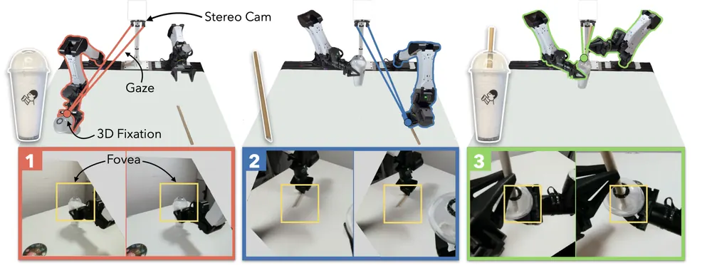
Keep the Effect, Drop the Actor: Programmable Effect-to-Execution World-Action Models
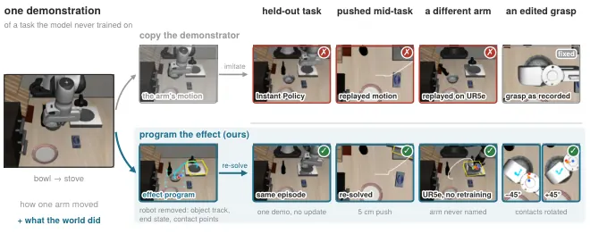
World-Calibrated Proposal-to-Action Flow for Vision-Language-Action Models
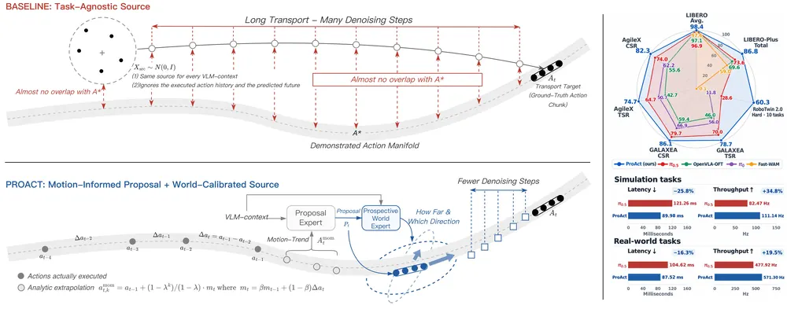
Native Action-Prior Learning from Videos for World Action Models
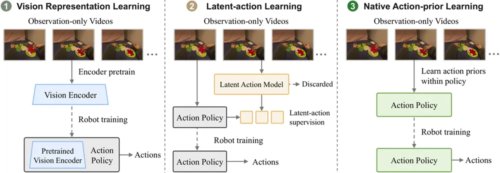
Rethinking World-Action Model for Compositional and In-Context Robotic Manipulation
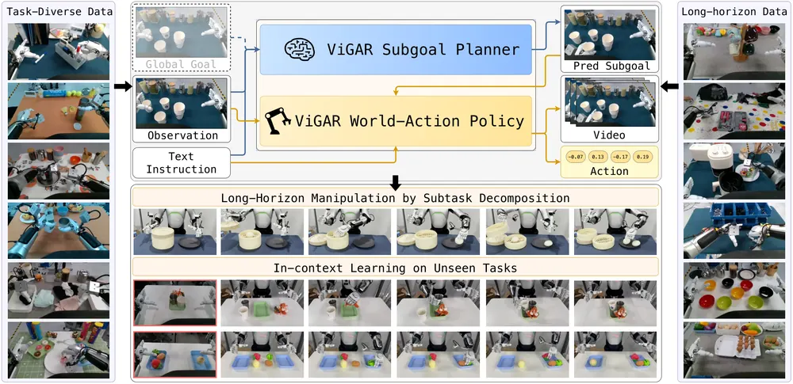
PointWAM: 3D World Action Modeling for Dexterous Robotic Manipulation
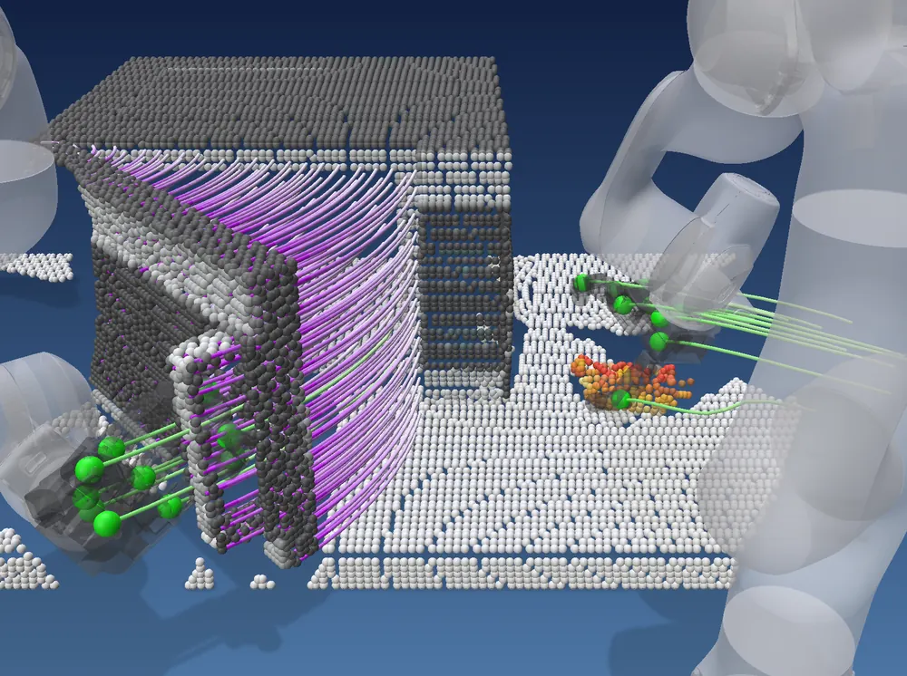
World Action Learning via Interaction-Centric Spectral Latent Guidance
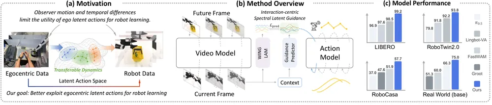
World Action Modeling with Progressive Visual Planning
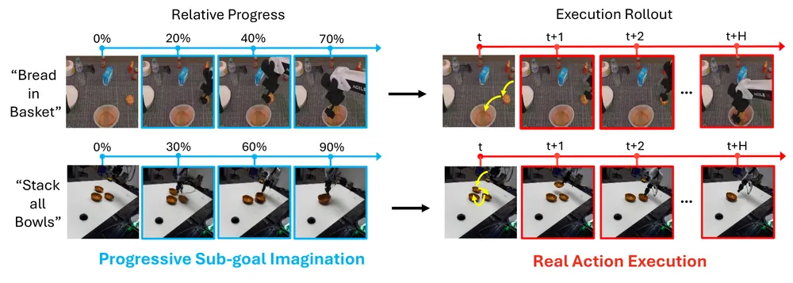
KungfuAthleteBot: learning high-dynamic humanoid motion from video with unified robust recovery
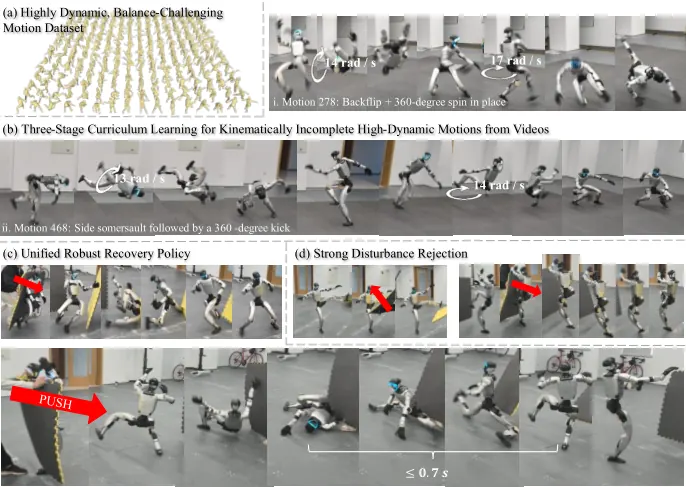
Multi-Fidelity Policy Gradients Stabilize Data-Scarce Reinforcement Learning
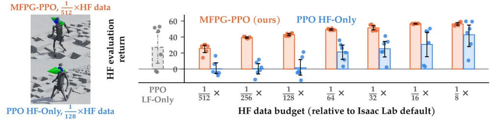
CriticHack: Evaluating Visual Rewards Under Robot Policy Optimization
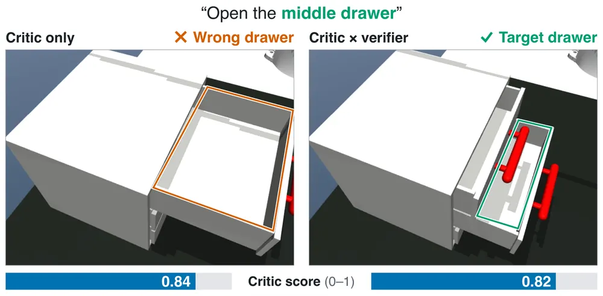
Imagine the Future, Internalize the Gist: Efficient VLA Reasoning via Internalized Spatiotemporal Imagination
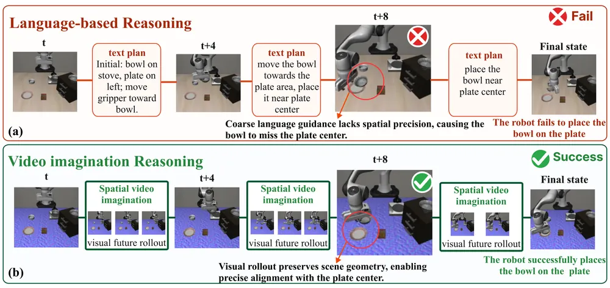
Keeping JEPA World Models Plannable When Little of the Frame Moves
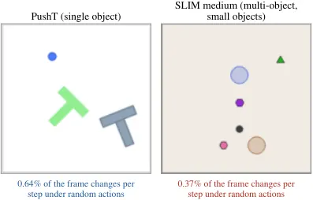
MobiAgent: Dual-Loop Recursive Policy Self-Improvement for Long-Horizon Mobile Manipulation
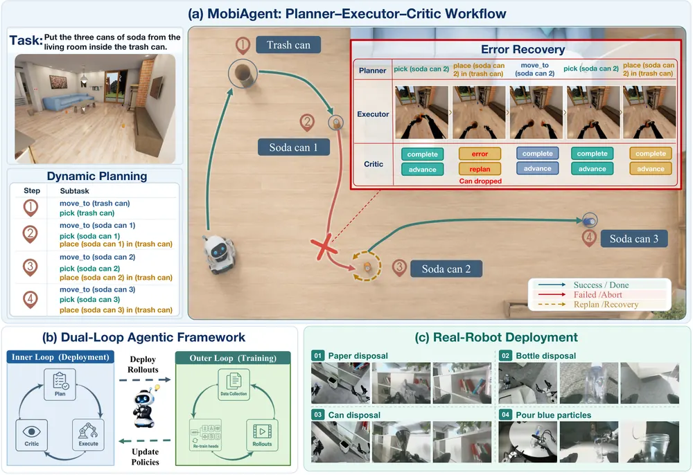
SocialVLA: A Social Perception Gateway for Human-Reaction-Based Failure Detection and Recovery in VLA Manipulation
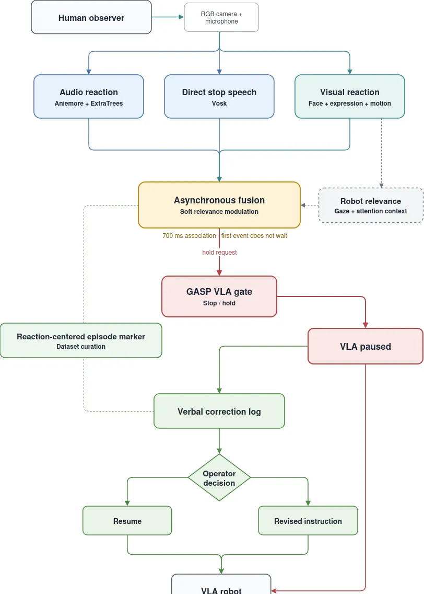
오늘의 핵심 연구 트렌드 종합
- world-action model(WAM)의 중간 표현 경쟁 — Top 15 중 7편이 미래 시각 상태와 action을 함께 예측하는 WAM 계열임. 표현 방식은 sparse sub-goal 프레임(ProWAM), 객체 keypoint effect program(PEWAM), 3D point trajectory(PointWAM), latent future(IG-VLA, ProAct), subgoal 이미지(ViGAR), spectral latent(WING)로 갈라지는 중임.
- 사람 영상을 로봇 action prior로 직접 전이 — NAVA-WAM은 observation-only 비디오로 action policy를 중간 표현 없이 직접 사전학습함(위 7편과 달리 WAM 중에서도 중간 표현 자체가 없는 예외임). WING은 카메라 모션을 분리해 interaction만 남기고, KungfuAthleteBot은 영상 복원 결함을 직접 수리함. 셋 다 "영상을 더 모으기"가 아니라 "영상의 결함을 다루는 방식"을 핵심 기여로 삼음.
- 실패 신호의 다각화 — 실패를 보는 관점이 내부 reward(CriticHack, wrong-object failure 증폭 진단), 외부 사람 반응(SocialVLA), world model latent collapse(JEPA plannability)로 나뉘어 각자 다른 실패 유형을 잡아냄. 세 신호를 한 시스템에서 합치는 연구는 아직 없음.
- 능동 지각(active perception)의 하드웨어 단순화 — EyeRobot 2.0은 손목 카메라 없이 스테레오 한 대의 시선을 움직여 정밀 조작을 수행함. 카메라를 늘리는 대신 움직이는 방향의 연구로, 오늘 배치에서 가장 실험 증거가 강함(실로봇 1,000회 이상).
- 데이터 희소 상황의 안정화 기법 — Multi-Fidelity Policy Gradients는 저정밀 시뮬레이터 데이터를 control variate로 써서 PPO 분산을 줄임. 실제 Franka에서는 업데이트당 4 에피소드로 학습이 안정화됨. WAM 열풍과 별개로, real-robot RL의 실질적 비용 문제를 다룸.
- 장기 과제의 자율 자기개선 — MobiAgent는 고정 sub-task 대신 atomic skill을 매 스텝 재조합하고, 배포 중 rollout을 사람 라벨 없이 clustering해 skill을 계속 재학습함. 개별 요소는 기존 라인의 조합이지만 통합 파이프라인으로서의 실증이 탄탄함.
유망 연구 방향 및 프로젝트 제안
WAM 예측-실제 괴리를 범용 실패 조기 감지 신호로 쓰기 - research question: world-action model이 예측한 미래 표현(sub-goal, point trajectory, latent)과 실제 rollout의 괴리가 조작 실패를 몇 스텝 전에 예고할 수 있는가? - 접근·novelty: ProWAM·PointWAM·ProAct 모두 "예측 대 실제" 신호를 갖고 있지만 failure detection에 쓰지 않음(각 논문의 recommendation에서 공통으로 지적된 공백). 이 괴리를 정량화해 test-time 모니터로 쓰는 게 신규 지점임. - 왜 지금·경쟁 prior works: SAFE·FAIL-Detect 같은 기존 failure detector는 action 자체의 uncertainty만 봄. WAM이 이미 world prediction을 갖고 있으니 추가 모델 없이 공짜로 얻는 신호라는 점이 차별점. - risk·target venue: WAM 종류별로 괴리의 의미(2D sub-goal vs 3D point vs latent)가 달라 일반화가 안 될 위험이 있음. target: CoRL/RSS.
object-centric 3DGS를 WAM의 중간 표현으로 교체 - research question: PointWAM의 point trajectory나 PEWAM의 keypoint effect program을 object-centric 3DGS로 바꾸면 non-rigid object·occlusion 상황에서 더 잘 버티는가? - 접근·novelty: 두 논문 모두 rigid keypoint/point cloud 기반이라 변형체·얇은 물체에 약함(두 deep review의 recommendation에서 공통 지적). 3DGS는 형상·외형을 함께 표현해 이 한계를 메울 후보임. - 왜 지금·경쟁 prior works: PointWAM(scene-actor 분리), PEWAM(effect-centric)이 바로 이번 주 공개돼 아직 3DGS 결합 시도가 없음. 선점 가능. - risk·target venue: 3DGS 렌더링·최적화 비용이 WAM의 실시간 inference 요구와 충돌할 위험이 있음. target: CoRL/RSS, 실로봇 검증 필수.
counterfactual world-action calibration - research question: ProAct는 factual trajectory만 학습해 proposal을 바꿨을 때 결과가 어떻게 달라지는지 모른다는 한계가 있음. counterfactual 학습 신호를 추가하면 (action 생성 시작점 분포를 교정하는 모듈인) World Expert의 교정 정확도가 오르는가? - 접근·novelty: 같은 장면에서 다른 proposal을 가정했을 때의 결과를 world model로 시뮬레이션해 counterfactual pair를 만들고, 이를 World Expert 학습에 추가하는 방향. - 왜 지금·경쟁 prior works: ProAct·DreamVLA·WorldVLA 계열이 모두 factual-only. counterfactual reasoning은 누리랩이 이미 우선순위로 두는 주제와 직결됨. - risk·target venue: counterfactual rollout의 품질이 world model 자체의 한계에 묶여 악순환할 위험이 있음. target: NeurIPS/ICLR.
내부 reward 신호와 외부 사람 반응 신호를 합친 hybrid failure detector - research question: CriticHack이 찾은 wrong-object failure(reward는 오르는데 엉뚱한 물체를 조작)를, SocialVLA의 사람 반응 채널이 몇 초 더 빨리 잡아내는가? - 접근·novelty: 두 신호가 서로 다른 실패 유형(reward 착시 vs 관찰자가 보기에 명백한 오류)을 잡을 가능성이 높아, 단순 병렬 결합만으로도 recall 개선 여지가 큼. - 왜 지금·경쟁 prior works: SocialVLA 저자도 robot-internal monitor와의 결합을 future work로 남겨둠. 경쟁자 없음. - risk·target venue: 사람 관찰자가 상시 배치되는 상황이 제한적이어서 일반적 배포 시나리오에서 활용도가 낮을 위험이 있음. target: IROS/ICRA.
sim-to-real control variate를 VLA test-time 적응에 적용 - research question: Multi-Fidelity Policy Gradients의 control variate 아이디어를, VLA fine-tuning이 아니라 배포 중 test-time replanning의 신뢰도 추정에 쓸 수 있는가? - 접근·novelty: world model의 sim rollout(저정밀)과 실제 관측(고정밀) 간 상관을 모니터링해, 상관이 깨지면 world model 예측에 기반한 replanning을 꺼버리는 fallback 게이트로 응용. - 왜 지금·경쟁 prior works: 원 논문은 RL 학습 단계에만 적용함. test-time 적응 쪽은 미개척. - risk·target venue: 분산 감소 이론이 학습 중 gradient 추정을 전제로 해서 inference-time으로 옮길 때 재유도가 필요함. target: CoRL, 빠른 산출 트랙에 적합.
오늘 반드시 읽어야 할 논문
- EyeRobot 2.0: Active Gaze for Precise Manipulation without Wrist Cameras — 손목 카메라 없이 능동 시선으로 정밀 조작을 수행해 오늘 배치에서 실험 증거가 가장 강함.
- Keep the Effect, Drop the Actor: Programmable Effect-to-Execution World-Action Models — 시연을 actor 없는 effect program으로 바꾸는 발상이 신선하고, 사람이 program을 직접 편집할 수 있다는 점에서 robot memory·test-time re-planning과 바로 연결됨.
- World-Calibrated Proposal-to-Action Flow for Vision-Language-Action Models — world model로 flow-matching source 자체를 교정해 효율성과 성능을 동시에 잡은 드문 사례임.
- Native Action-Prior Learning from Videos for World Action Models — action-free 비디오에서 action policy를 중간 단계 없이 직접 학습하는 구조로, 대규모 비디오 활용의 scalable path를 제시함.
- PointWAM: 3D World Action Modeling for Dexterous Robotic Manipulation — world를 scene과 actor로 명시적으로 분리하는 3D 표현이 object-centric representation 연구에 직접 참고가 됨.
- Rethinking World-Action Model for Compositional and In-Context Robotic Manipulation — subgoal planner와 executor를 world model 표현으로 공유시켜 long-horizon compositional task를 푸는 구조임.
- World Action Learning via Interaction-Centric Spectral Latent Guidance — egocentric video에서 카메라 모션과 interaction을 분리하는 전처리 방식이 다른 video-to-robot 연구에도 바로 적용 가능함.
- Multi-Fidelity Policy Gradients Stabilize Data-Scarce Reinforcement Learning — 업데이트당 실제 로봇 에피소드 4개로 학습을 안정화시킨 결과가 실질적이라 real-robot RL 비용 문제에 바로 쓸 수 있음.
- CriticHack: Evaluating Visual Rewards Under Robot Policy Optimization — learned reward로 정책을 최적화할 때 생기는 wrong-object failure 착시를 엄밀하게 입증해, reward 기반 VLA RL fine-tuning을 하는 모든 연구가 점검해야 할 함정을 보여줌.
전체 1차 스크리닝 결과 (542편, 점수순) 펼치기
| # | 제목 | 점수 | 🤖 | 분야 | 한 줄 근거 |
|---|---|---|---|---|---|
| 1 | World Action Modeling with Progressive Visual Planning | 82 | 9 | World Model | sparse visual sub-goal을 예측해 action을 anchor하는 world action model로 실로봇 zero-shot 70% 성공을 보여 world model·manipulation 우선 주제에 정확히 부합함 |
| 2 | Keep the Effect, Drop the Actor: Programmable Effect-to-Execution World-Action Models | 76 | 9 | World Model | 데모에서 actor를 제거하고 object effect만 추출해 programmable하게 재조합하는 새로운 world-action representation이며 네 개 팔에서 재학습 없이 전이되고 실로봇 수치도 강함. |
| 3 | PointWAM: 3D World Action Modeling for Dexterous Robotic Manipulation | 76 | 9 | World Model | 장면과 손을 분리해 3D point trajectory로 공동 예측하는 world-action model로 사람 영상 사전학습만으로 DexJoCo 성공률을 56.9%p 올리고 실로봇에서도 강한 VLA를 능가함. |
| 4 | Native Action-Prior Learning from Videos for World Action Models | 72 | 9 | VLA | 관찰 전용 비디오에서 직접 action policy를 사전학습하는 native action-prior 학습으로 action 라벨 없는 robot 데이터 확장성을 보여주고 real-robot 일반화를 입증함 |
| 5 | Rethinking World-Action Model for Compositional and In-Context Robotic Manipulation | 72 | 9 | World Model | world-action model에 subgoal 단위 계층 구조를 도입해 compositional·in-context manipulation을 다루고 RoboTwin과 실로봇에서 baseline 대비 큰 성능 향상을 보임. |
| 6 | EyeRobot 2.0: Active Gaze for Precise Manipulation without Wrist Cameras | 70 | 9 | Manipulation | 스테레오 카메라만으로 두 눈이 응시점을 능동적으로 좇게 해 wrist camera 없이도 정밀 양팔 조작을 가능케 한 active gaze 방식으로 1000회 이상 실로봇 시험에서 손목카메라 가림 상황을 두 배 이상 능가함. |
| 7 | Keeping JEPA World Models Plannable When Little of the Frame Moves | 70 | 9 | World Model | JEPA world model이 action-insensitive latent 때문에 planning에 실패하는 원인을 진단하고 inverse-dynamics 보조 손실로 language-goal pushing 성공률을 0.003에서 0.35로 끌어올린 연구임 |
| 8 | Imagine the Future, Internalize the Gist: Efficient VLA Reasoning via Internalized Spatiotemporal Imagination | 70 | 8 | VLA | VLA가 미래 scene을 latent 공간에서 상상하고 압축해 reasoning 비용을 6배 줄이는 test-time efficiency 기여로 robot manipulation과 직결됨 |
| 9 | CriticHack: Evaluating Visual Rewards Under Robot Policy Optimization | 70 | 8 | RL | 학습된 visual reward가 성공률과 task-irrelevant 실패(wrong-object)를 동시에 올릴 수 있음을 정량적으로 보여 reward hacking의 숨은 메커니즘을 규명한 rigorous한 분석임. |
| 10 | World-Calibrated Proposal-to-Action Flow for Vision-Language-Action Models | 68 | 9 | VLA | flow 기반 VLA의 생성 시작점을 최근 행동과 예측 미래에 맞춰 보정하는 ProAct로 파이-0.5 대비 denoising step을 절반으로 줄이면서 sim·실로봇 성능을 모두 높인 VLA formulation 연구임 |
| 11 | SocialVLA: A Social Perception Gateway for Human-Reaction-Based Failure Detection and Recovery in VLA Manipulation | 68 | 9 | VLA | 사람의 반응을 실패 감지 신호로 쓰는 새로운 failure detection 문제 설정이며 실제 15명 참가자·실로봇 실험으로 뒷받침됨. |
| 12 | MobiAgent: Dual-Loop Recursive Policy Self-Improvement for Long-Horizon Mobile Manipulation | 68 | 9 | Manipulation | 고수준 추론과 저수준 flow-matching 실행을 분리하고 배포 rollout을 자동 세분화해 스킬 라이브러리를 지속 학습하는 dual-loop 프레임워크로 RoboCasa 성공률을 7.5%에서 27.5%로 끌어올림. |
| 13 | World Action Learning via Interaction-Centric Spectral Latent Guidance | 68 | 9 | World Model | 에고센트릭 영상에서 카메라 모션을 분리하고 손-물체 상호작용만 latent action으로 증류한 뒤 저주파 스펙트럼 성분으로 로봇 행동을 가이드하는 방법으로 LIBERO 99.2%, RoboTwin 93.8%의 강한 결과를 보임. |
| 14 | Multi-Fidelity Policy Gradients Stabilize Data-Scarce Reinforcement Learning | 68 | 8 | RL | 저충실도 시뮬레이터 데이터를 control variate로 활용해 고충실도 데이터 효율을 높인 PPO 변형이며 실제 Franka 로봇팔에서 4회 에피소드만으로 안정적 학습을 보임 |
| 15 | KungfuAthleteBot: learning high-dynamic humanoid motion from video with unified robust recovery | 68 | 8 | RL | 영상에서 추출한 비물리적 trajectory를 물리적으로 교정하고 pseudo-low-kinetic-energy 샘플링으로 실현 가능한 초기화를 유도해 단일 정책이 임의의 낙상에서 0.7초 만에 복구하는 humanoid 고난도 모션 학습 결과임. |
| 16 | RIFAR: Reliability and Forgetting-Aware Replay for Continual Robot Learning | 68 | 8 | Manipulation | world-action model의 생성 replay에서 행동-시각 일관성을 걸러내는 RIFAR로 LIBERO와 실로봇에서 continual robot learning의 forgetting을 줄인 연구임 |
| 17 | Proprioceptive Sketches as Long-Horizon Intent for Generative Action Policies | 66 | 8 | Manipulation | 시간이 아닌 호길이로 매개화한 compact한 proprioceptive sketch로 장기 의도를 표현하는 새로운 representation이며 real bimanual task에서 47.5%에서 75%로 성공률을 크게 올림. |
| 18 | Equivariant Visual-Tactile Diffusion Policy for Contact-Rich Manipulation | 65 | 8 | Manipulation | 시각·촉각을 구형 토큰으로 투영해 equivariant하게 융합하는 CoRL 2026 논문으로 contact-rich 과제에서 데이터 효율을 크게 높임. |
| 19 | XGenAct: Geometry-Enhanced World Action Models through Cross-Task Generation | 65 | 8 | World Model | RGB·action뿐 아니라 depth·normal·segmentation까지 하나의 video diffusion transformer로 통합 예측하는 world-action model로 RLBench 외부 비교에서 52% 대 26%로 baseline을 크게 앞섬. |
| 20 | VIGOR: Zero-Shot Visual Generalization via Latent-Space Consistency in Model-Based Reinforcement Learning | 65 | 7 | World Model | model-based RL의 latent-space consistency로 시각적 분포 변화에 대한 zero-shot 일반화를 개선하고 DMC·Robosuite에서 검증한 world model 연구임 |
| 21 | Spatial Memory Intelligence: Endowing World Models with Understanding-Driven Long-Term Memory | 65 | 6 | World Model | world model의 장기 spatial memory를 MLLM 기반 understanding으로 관리하는 프레임워크로 robot memory와 직결됨 |
| 22 | OpenRUA: Robot-Use Agents Are Zero-Shot Visuomotor Policies | 64 | 8 | VLA | 코딩 에이전트에 ROS2 터미널 접근만 주고 별도 추상화 없이 zero-shot visuomotor policy로 쓰는 새로운 패러다임이며 CaP-Bench 99%, LIBERO-PRO 87%로 기존 전용 파이프라인 필요성에 의문을 제기함. |
| 23 | DeltaWorld: Physically Consistent Interactive World Simulators via Action-Conditioned Latent Increment Learning | 64 | 8 | World Model | 다음 latent state 전체 대신 action 유도 변화량(delta)만 예측해 object interpenetration 등 물리적 비일관성을 줄인 world model이며 cross-robot 데이터셋에서 FVD 46.6% 개선함. |
| 24 | SARI: Phase-Split Sim-Real Co-Training for Contact-Rich Manipulation | 63 | 8 | Manipulation | 자유공간 접근은 시뮬레이션에서, contact 상호작용은 소수 실데모에서 학습하는 phase-split 전략으로 실데이터 수집시간을 34.3% 줄이면서 미지 배치에서 baseline이 전부 실패하는 상황에서 27.5% 성공함. |
| 25 | SoTa: Soft Tactile Skins for Dexterous Manipulation | 62 | 9 | Manipulation | 사람과 로봇 손에 공통 레이아웃으로 부착 가능한 저가 정전식 촉각 피부(SoTa)로 사람 데모를 섞어 조작 성공률을 22.8%에서 45.9%로 두 배 이상 올린 tactile perception 연구임 |
| 26 | SimpleTouch: Can Vision-Language-Action Models Master Contact-Rich Manipulation Without Tactile Policy Pretraining? | 62 | 8 | VLA | tactile policy 사전학습이나 별도 정합 없이 π0.5에 tactile expert만 추가해도 contact-rich manipulation이 가능함을 보여 기존 가정에 반례를 제시함. |
| 27 | Skill2Real: Agentic Skill Learning for Zero-Shot Sim-to-Real Robot Manipulation | 62 | 8 | Manipulation | Cerebellum-Brain 계층으로 로컬 스킬과 과제 조합을 분리 학습해 zero-shot sim-to-real을 달성했고 LIBERO-Pro Long에서 2%에서 56.3%로 큰 향상을 보임. |
| 28 | Safe Streaming Flow Planning by Aligning Sampling Dynamics with Execution Dynamics | 62 | 8 | RL | flow sampling dynamics를 execution dynamics와 맞춰 실행 단계에만 고차 control barrier function을 적용하는 CoRL 2026 논문으로 안전성과 재계획 지연을 동시에 개선함. |
| 29 | AVL-JEPA: Preventing Causal Dynamics Information Collapse In Joint Embedding Predictive Architecture World Models | 62 | 8 | World Model | JEPA가 동작의 물리적 결과 정보를 버리는 causal dynamics collapse를 식별하고 action-grounded anchor와 vision-invariance pathway로 방지하는 방법으로 시각 교란 하에서도 성공률을 크게 지킴. |
| 30 | Bridging Frontier Reasoning and Robot Execution: From Autonomous Demonstration Generation to Dense Language Supervision | 62 | 8 | VLA | frontier 모델로 교정 데모를 자동 생성해 로컬 정책을 학습시키고 세 단계 조밀 언어 지도까지 결합한 이중 bridge 구조로 RoboCasa 365·BEHAVIOR-1K 장기과제에서 효과를 보임. |
| 31 | Counterfactual Action Evaluation, Observation Bottlenecks, and Representation Geometry in Joint-Embedding Predictive World Models | 62 | 7 | World Model | JEPA 기반 world model이 action의 결과를 실제로 구별하는지 simulator state fork로 검증해 observation bottleneck과 action-path 활용 부족을 밝힌 counterfactual 평가 연구임 |
| 32 | Does Physics Live in the Activations? Localizing Physical Quantities in Video Diffusion Models | 62 | 5 | World Model | video diffusion model의 내부 activation에서 물리량이 denoising 중 능동적으로 구성됨을 probing으로 밝혀 world model의 물리 이해를 규명함 |
| 33 | SCION: Scene Composition with Instanced Neural Primitives | 62 | 4 | 3D Vision | 3DGS를 재사용 가능한 primitive와 instance로 압축하는 구조로 object-centric 3D representation에 기여함 |
| 34 | Filter-Aware Fine-Tuning for Safe Humanoid Whole-Body Tracking | 60 | 7 | RL | 안전 필터와 추적 정책 간 불일치를 분석하고 CoFiT로 보강한 연구로 Unitree G1 실기 검증까지 포함하나 문제 자체는 기존 안전필터 통합의 engineering 개선에 가까움. |
| 35 | UniIntervene++: An Adaptive Intervention Agent for Efficient Real-World Reinforcement Learning | 58 | 8 | Manipulation | policy 역량 변화에 맞춰 자율 실행과 보조 개입 비율을 semi-MDP option으로 학습하는 UniIntervene++로 5개 실로봇 조작 과제에서 성공률 89.67%, 개입 0.77%를 달성한 연구임 |
| 36 | MixVLA: Adaptive Mixing of Non-Invariant Information for Generalizable Vision-Language-Action Models | 58 | 8 | VLA | task-irrelevant 비불변 정보를 적응적으로 섞어 정규화하는 model-agnostic 학습법으로 LIBERO-Plus·RoboTwin perturbation·실로봇 전반에서 OOD robustness를 개선함. |
| 37 | RATE: Risk-Aware Tactile Encoding for Contact-rich Robotic Manipulation | 58 | 8 | Manipulation | 비슷한 촉각 신호라도 task 위험도가 다를 수 있음을 반영해 history 기반으로 위험을 인코딩하는 tactile representation으로 벤치마크 전반에서 성공률을 높임. |
| 38 | GeoScaffold: Learning Compact Geometric Latents via Reconstruction for Efficient Vision-Language Navigation | 58 | 7 | Navigation | 학습 시에만 기하 정보를 내재화하고 추론 시 깊이 센서나 3D 인코더를 없애는 VLN 프레임워크로 지오메트리 scaffold 아이디어가 새로우나 경량화 지향이 평가에서 가점 요인은 아님. |
| 39 | RoboBridge: A Self-Evolving Embodied Agent Framework for Sim-to-Real Transfer | 58 | 7 | Embodied AI | sim-to-real 전이를 절차적 스킬의 지속적 적응 문제로 재정의하고 VLA를 도구로 감싸 재학습 없이 실행 보정하는 구조가 흥미로움. |
| 40 | Beyond Reward Hacking: Proxy Divergence Across Four Layers of a Staged Humanoid Learning Pipeline | 58 | 7 | RL | reward뿐 아니라 curriculum gate·평가 통계·reference motion 모두를 proxy로 보고 각 층의 divergence 메커니즘을 정식화한 개념적 확장으로 단일 humanoid 학습 사례로 구체적 반례를 보임. |
| 41 | EVEWorld: Physical Evolution Supervision for Embodied World Models | 58 | 6 | World Model | embodied world model이 시각적 그럴듯함만 좇는 Model Laziness를 process-level supervision으로 줄여 물리적으로 일관된 객체 진화를 학습함 |
| 42 | MoSE3: Learning World-Space SE(3) at Every Pixel | 58 | 6 | 3D Vision | 단안 비디오에서 픽셀 단위 6-DoF SE(3) 모션을 point track과 rigidity로 복원해 관절체 객체의 강체 그룹을 함께 추정함 |
| 43 | Awomo-SimDataEngine: Agentic Simulation-ReadyWorld Generation | 56 | 8 | Manipulation | asset·scene 생성부터 로봇 데모 합성까지 묶은 agentic 시뮬레이션 데이터 엔진(Awomo)으로 LIBERO-Plus에서 World-Action Model 성공률을 77%에서 89%로 올린 실용적 데이터 생성 연구임 |
| 44 | DexJoCo-X: Benchmarking Action Representations for Multi-Hand Dexterous Manipulation | 56 | 8 | Manipulation | 일곱 종 dexterous hand에 걸친 action representation을 통제 비교한 벤치마크로 cross-embodiment 학습이 좌표·사전학습·아키텍처 전체의 조합에 달려 있음을 보임. |
| 45 | Mind the Refinement Gap: When Safe High-Level Robot Plans Produce Unsafe Executions | 55 | 8 | Embodied AI | semantic-graph 기반 고수준 plan이 안전하다고 판정되어도 실제 refined trace에서는 불안전해지는 refinement gap을 RoboGuard로 실증한 robot safety 연구임 |
| 46 | NEEDLEWORK: Offline Rewriting of Robot Data with Verified Local Stitches | 55 | 8 | Manipulation | RGB와 proprioception만으로 실패·비효율 구간을 짧은 검증된 action bridge로 이어붙여 오프라인에서 로봇 데이터를 보강하는 NEEDLE로 실로봇 과제 성공률을 평균 21%p 올린 연구임 |
| 47 | RYOPO: Bringing End-to-End Category-Level Object Pose Estimation into Real Time | 55 | 7 | Manipulation | RGB-D 기반 category-level 9-DoF object pose를 end-to-end로 실시간 추정해 manipulation의 pose 전처리 비용을 줄임 |
| 48 | CrowdOcc: Monocular Semantic Scene Completion for Quadruped Robots in Crowded Indoor Environments | 55 | 7 | Navigation | 사족보행 로봇을 위한 crowded indoor 환경의 단안 semantic scene completion 데이터셋·방법으로 ICRA 제출 로봇 연구임 |
| 49 | Co-design Gym: A Unified Benchmark for Embodiment-Policy Co-optimization | 55 | 7 | RL | 로봇 조작·보행 등 20개 도메인에서 embodiment와 policy를 공동 최적화하는 벤치마크로 co-design 연구의 기준점을 제공함 |
| 50 | ManiPhysicsBench: Physics-Based Assessment of Object Preservation in VLA Manipulation | 55 | 7 | Manipulation | task 성공과 물리적 객체 보존을 분리 평가하는 새로운 benchmark로 VLA가 성공은 해도 물체를 손상시킬 수 있음을 드러낸 유의미한 평가축 제안임. |
| 51 | Learning Reflexive Behavior for Contact-Rich Manipulation | 55 | 7 | Manipulation | 스프링·평면·레일 같은 단순 상호작용에서 학습한 proprioceptive reflex를 고수준 제어기 아래 고정층으로 두는 아이디어로 peg insertion 성공률을 22%에서 58%까지 끌어올림. |
| 52 | Register-Routed Delayed Fusion: Rewiring Shortcut-Prone Observation Fusion in Visuomotor Imitation | 55 | 7 | Manipulation | 압축 신호가 시각 토큰에 조기 개입하는 경로를 register 기반으로 지연시켜 cross-modal shortcut을 억제한 fusion topology 연구로 appearance shift에서 ACT 대비 일관되게 우위를 보임. |
| 53 | Less Decoder is More Encoder: Geometric Representation Learning from Novel View Synthesis | 55 | 6 | Manipulation | novel view synthesis의 decoder 표현력을 제한해 transferable geometric representation을 학습시키고 robot manipulation 등 5개 과제에서 검증함 |
| 54 | On Representational Alignment among Embodied Agents | 55 | 6 | Embodied AI | 여러 embodied agent 간 표상이 항상 정렬될 필요는 없고 interaction-relevant한 모호성만 해소하면 된다는 relational sufficiency 이론을 정식화한 일반화 가능한 틀임. |
| 55 | ProAR: Learning Prospective Reasoning with Autoregressive Video Models | 55 | 5 | World Model | 목표 프레임 예측과 미래 표현 self-alignment로 autoregressive 비디오 생성을 goal-directed reasoning으로 전환하고 embodied reasoning 적용 가능성을 제시함 |
| 56 | Seeing, Saying, but Not Using: From Reportable Spatial Facts to Usable States in Multimodal Large Language Models | 55 | 4 | Embodied AI | MLLM이 공간 사실을 보고는 하지만 변환 추론에 사용하지 못하는 availability-utilization gap을 밝힌 embodied spatial reasoning 연구임 |
| 57 | Detect and Suppress: A Mechanistic Defense against Adversarial Patches in VLA Models | 54 | 7 | VLA | sparse autoencoder로 adversarial patch에 반응하는 내부 feature를 찾아 공격 탐지 시에만 억제하는 mechanistic defense로 fine-tuning 없이 VLA 강건성을 높임. |
| 58 | A Unified Framework for Empowerment and Predictive Control | 54 | 6 | RL | probing 정책과 실행 정책을 하나로 통합해 1차 미분만으로 계산 가능한 empowerment를 표준 MPC에 결합한 일반화 가능한 공식화임. |
| 59 | CORNAV: Construction-Aware Reasoning for Robot Navigation on Active Worksites | 52 | 7 | Navigation | CAD 도면과 공사 일정을 open-vocabulary scene graph에 정렬해 건설현장 내비게이션 성공률을 13%에서 72.2%로 올린 실용적 프레임워크임. |
| 60 | Test-time Multi-agent Coordination by Decomposed Value Gradient Flow | 52 | 5 | RL | offline MARL에서 flow-matching prior와 test-time Stein variational gradient로 고가치 영역을 탐색하는 test-time optimization 기법으로 우선주제와 연결되나 robot 실험은 없음 |
| 61 | World Embedding Benchmark | 52 | 4 | World Model | 유체·강체 등 물리 현상 8천 사례로 비디오 표현이 물리 정보를 얼마나 담는지 평가하는 world model 벤치마크임 |
| 62 | Bidirectional Voronoi-biased Exploration Curriculum for Reinforcement Learning | 50 | 7 | Manipulation | 시작·목표 상태를 양방향으로 확장해 sparse reward 장기 과제를 푸는 BVER 커리큘럼으로 사족보행 박스 등반과 로봇팔 ring-on-peg 조립까지 실로봇형 과제에서 검증된 exploration 기법임 |
| 63 | LOCUS: Landmark-Oriented Container Discrimination Using Spatial Graphs | 50 | 7 | Embodied AI | scene graph 위에서 GNN으로 CLIP 임베딩을 갱신해 공간·의미 정보를 함께 쓰는 container 탐색 방법으로 CLIP 단독 대비 우수하고 실로봇 탐색까지 보임. |
| 64 | EmbPASS: Towards Cross-Embodiment Open Panoramic Segmentation | 50 | 6 | Embodied AI | 차량·드론·웨어러블·사족보행 플랫폼 전반의 cross-embodiment panoramic segmentation 벤치마크와 방법을 제시함 |
| 65 | Autonomous Robotic Navigation for Endovascular Brain-Computer Interface Access | 50 | 6 | RL | 뇌혈관 내 BCI 접근을 위한 최초의 자율 로봇 내비게이션으로 도메인은 새롭지만 SAC와 failure prediction은 기존 기법의 의료 로봇 적용에 가까움. |
| 66 | SpectralCache: Accelerating Diffusion-Based World Models via Spectral Feature Caching | 50 | 4 | World Model | diffusion 기반 world model의 spectral feature caching으로 추론을 5배 가속하는 world model 효율화 기여임 |
| 67 | Mastering Atari 2600 Games with Discovered Options | 50 | 4 | RL | Laplacian representation으로 option을 자동 발견해 탐색·credit assignment·일반화를 동시에 개선한 Wayfarer로 Montezuma's Revenge 등에서 state-of-the-art를 달성한 skill 발견 연구임 |
| 68 | MintFlow: Minimal Trajectory Intervention for Constrained Flow Matching | 50 | 4 | LG | 학습된 flow field는 그대로 두고 중간 상태에 최소 개입만 가해 제약을 만족시키는 adjoint 기반 닫힌해 방법으로 flow-matching 기반 로봇 정책의 test-time 제약 충족에 응용될 여지가 있음. |
| 69 | How To Train Your World Model: Fine-tuning vs RAG for LM-based World Modeling | 50 | 4 | World Model | embodied·web nav 환경에서 LM 기반 world model의 fine-tuning 대 RAG를 체계 비교한 실증 연구임 |
| 70 | TerrainForge: Physics-Grounded road geometry Editing for Counterfactual Autonomous Driving | 50 | 3 | CV | 도로 기하구조 편집이 차량 동역학에 전파되도록 한 물리 기반 counterfactual 자율주행 시뮬레이션임 |
| 71 | CHASE-VLA: Post-Training Quantization Framework for Vision-Language-Action Models with Chunk-Aware Scale Estimation | 48 | 6 | VLA | VLA의 diffusion action expert를 chunk 인식 기반으로 W4A4 양자화해 FP16 성능을 유지하는 효율화 기여임 |
| 72 | OmniAct3D: Leveraging Foundation Geometry and Evidence-Grounded Reasoning for Panoramic 3D Detection | 48 | 6 | Embodied AI | 360도 파노라마 영상에 VFM을 적응시킨 mobile embodied agent용 3D 탐지로 surround perception에 기여함 |
| 73 | AdaTempo: Learning Shared Relative Tempo from Demonstrations for Faster Robot Manipulation | 48 | 6 | Manipulation | 데모 간 공유된 상대적 tempo를 찾아 가속 프로파일을 학습하는 방법으로 최대 3.57배 속도 향상을 보이나 기존 imitation policy 위에 얹는 모듈 수준 기여임. |
| 74 | Around the World: Unified Learned Locomotion on a 270 g Continuous-Rotation Quadruped | 48 | 6 | RL | 270g 연속회전 다리 쿼드러페드에서 단일 posture-conditioned RL 정책으로 직립·역보행·착지복구를 통합한 결과가 인상적이나 로봇러닝 핵심 주제보다는 하드웨어·로코모션 쪽 기여임. |
| 75 | CSIR: Contextually and Socially Informed Robots for Efficient Person Goal Navigation | 48 | 6 | Navigation | 거리와 의미 정보를 신뢰도로 가중한 사람찾기 내비게이션 프레임워크로 실로봇 검증은 있으나 방법론적 새로움은 제한적임. |
| 76 | What Should World Models Forget? Stratified Retention for Continual Adaptation | 48 | 5 | World Model | world model이 무엇을 잊어야 하는지를 불변 시간축 기준으로 계층화해 물리·object permanence는 보존하고 인스턴스 사실은 갱신해야 한다고 제안한 continual world model 연구임 |
| 77 | How Causality Bridges the Semantic Gap | 48 | 4 | CV | causal graph로부터 변수 의미를 복원하는 구조적 정렬 기법을 세 가지 robotics 시나리오에서 검증했으나 핵심 기여는 causal semantic labeling이고 robot action과는 직접 연결되지 않음 |
| 78 | Optimal Planning in a Dynamic World | 48 | 4 | Navigation | 실행 시작 시각을 모르는 상태에서 compound arrival time function으로 동적 환경 planning을 일반화한 이론 연구로 SIPP류 로봇 경로계획에 적용 가능함 |
| 79 | Octrees as an Explicit 3D Language | 48 | 3 | 3D Vision | octree occupancy token으로 3D를 명시적 언어처럼 다루는 새 representation을 제시함 |
| 80 | T3lescope: Arbitrary-Resolution High-Fidelity Generative Surface Reconstruction from Images | 48 | 3 | 3D Vision | 단일 fixed-resolution generator를 coarse-to-fine cascade로 적용해 객체부터 도시 규모까지 일관된 메시를 생성함 |
| 81 | Tropical Reinforcement Learning | 48 | 2 | RL | RL의 기대값 합산을 max 연산으로 바꾸는 tropical semiring 제안은 새로운 paradigm이나 LLM 추론에 한정됨 |
| 82 | I2CD: Direct Image-to-Convex Decomposition for Simulation-Ready Collision Geometry | 46 | 6 | 3D Vision | 이미지에서 바로 convex decomposition을 예측해 물리 시뮬레이션용 충돌 geometry를 0.5초에 생성하는 효율적 도구로 실로봇 pick-and-place에도 적용되나 핵심은 엔지니어링 파이프라인 개선임. |
| 83 | Real-time Event-camera Stereo Visual Odometry via Keytime Gaussian Process Regression | 46 | 5 | 3D Vision | 이벤트카메라 stereo VO에 continuous-time GP를 결합해 상태 수를 줄이면서 ES-PTAM 대비 정확도를 크게 높였으나 로봇러닝 우선순위 주제와는 거리가 있는 perception 인프라 기여임. |
| 84 | SceneFactory-3D: Lifting 2D Traffic Scenes into 3D Physical Counterfactuals for Scalable Physically Grounded Safety Evaluation | 46 | 5 | Multimodal | 타이어-노면 물리를 반영한 GPU 배치 주행 시뮬레이터로 도로 조건 physical counterfactual을 대규모 병렬 평가하는 인프라 기여이나 자율주행 도메인이라 로봇러닝 우선순위와는 다소 거리가 있음. |
| 85 | SCOPE-4D: Endoscopic 4D Geometry Foundation Models | 45 | 4 | 3D Vision | 내시경 4D geometry foundation model로 robotic assistance를 언급하나 의료 도메인 중심 기여임 |
| 86 | 4DCodeBench: Benchmarking Agents on Inverse Graphics of Dynamic Scenes | 45 | 4 | World Model | 변형·유체·파괴 등 동역학을 비디오에서 실행 가능한 그래픽스 코드로 재구성하는 agent 벤치마크로 물리적 world model 이해를 평가함 |
| 87 | SymRegFlow: Symmetry-Regularized Flow Matching for Video World Models | 45 | 3 | World Model | 다중 뷰 world model을 연속 카메라 포즈로 확장하는 symmetry regularization 기법으로 자율주행 영상 생성에 적용됨 |
| 88 | Parasitic Co-Denoising: Unlocking 3D Human Motion Generation in a Frozen Video Diffusion Model | 45 | 3 | Video | frozen video diffusion model의 중간 상태에서 3D human motion을 추출하는 parasitic decoding 패러다임으로 implicit physical/motion prior 활용이 흥미로움 |
| 89 | Sentry: Learning to Recover from LLM Agent Failures at Test Time | 45 | 3 | Embodied AI | LLM 에이전트 실패 지식을 조건부로만 노출해 복구를 돕는 Sentry 레이어로 failure detection·recovery 우선주제와 직결되나 robot 실험은 없고 LLM agent 벤치마크에 한정됨 |
| 90 | World Editing: Intervening on Executable Worlds at Increasing Depth | 45 | 3 | World Model | 실행 가능한 게임 world를 속성·개체·역학·시스템 깊이별로 편집하는 IGMBench를 제시해 world editing을 world generation과 구분되는 능력으로 정식화했으나 물리 로봇 world model과는 도메인이 다름. |
| 91 | FastOPD: On-Policy Distillation for Lightweight VLA Deployment | 44 | 6 | VLA | on-policy distillation으로 대형 VLA를 경량화하는 방법으로 추론 지연을 78% 줄였으나 경량화·효율화 지향 기여라 우선 평가 대상은 아님. |
| 92 | Localized Conformal Safety Monitoring with Vision-Language Models for Autonomous Driving | 44 | 5 | Multimodal | frozen VLM 위에 conformal prediction 보정층을 얹어 충돌 예측 신뢰도를 높인 방법으로 CARLA 1.5만 trajectory에서 효과를 보였으나 5페이지 extended abstract로 깊이는 제한적임. |
| 93 | RoboChemGym: A Protocol-Driven Generative Simulation Framework for Long-Horizon Chemical Manipulation | 42 | 6 | Manipulation | 화학 실험 프로토콜 기반 장기 조작 데모를 자동 생성하는 시뮬레이션 프레임워크로 도메인은 새롭지만 방법론 자체는 기존 task synthesis 기법의 적용에 가까움. |
| 94 | Permutation Robustness Is Not Enough: Action Collapse in Multi-Agent Transformer Policies | 42 | 5 | RL | 순열 일관성 지표만으로는 agent가 똑같은 행동만 고르는 action collapse를 놓칠 수 있음을 보인 진단 연구로 통찰은 유효하나 합성 내비게이션 과제 범위가 좁음. |
| 95 | From Language Priors to Field Adaptation: Preference Learning for Traversability Estimation | 42 | 5 | Navigation | 언어 prior와 소수 상대 이미지 주석으로 traversability를 도메인 적응시키는 샘플효율적 방법으로 실용적이나 novelty는 기존 preference learning 틀 안에 머무름. |
| 96 | Ego2World: Compiling Egocentric Cooking Videos into Executable Worlds for Belief-State Planning | 42 | 4 | Embodied AI | egocentric 요리 영상을 실행 가능한 belief-state planning 환경으로 변환한 벤치마크로 embodied planning과 맞닿아 있음 |
| 97 | GRAFT: Growing Agglomerative Foundation Models via Continual Teacher Distillation | 42 | 3 | CV | 여러 foundation model 지식을 continual distillation으로 통합하는 방법으로 범용 perception backbone에 기여함 |
| 98 | EpiWorld: Grounding LLM Policy Agents in Epidemiological World Models | 42 | 3 | World Model | 학습된 역학 world model과 정책 에이전트를 묶어 반사실적 rollout으로 정책을 개선하는 closed-loop 구조가 world model 활용 측면에서 로봇 연구에 참고될 수 있으나 도메인은 역학 정책임. |
| 99 | Learning from Repaired Reasoning: Root-Cause-Guided On-Policy Distillation | 42 | 3 | NLP | 학생 모델의 추론에서 최초 오류 지점을 찾아 국소 수정하고 이어 학습시키는 root-cause 증류법으로 failure diagnosis 방법론 측면에서 로봇 실패복구 연구에 참고될 수 있음. |
| 100 | Language Models that Play Chess and Explain Their Moves | 42 | 3 | Multimodal | silent expert 체스 인코더와 LM을 cross-attention으로 묶고 Bellman-update 방식 distillation으로 설명 가능한 체스 모델을 만든 구조로 저자들이 로봇 등 silent expert encoder가 있는 도메인에 일반화 가능하다고 제시함. |
| 101 | Choosing Before Acting: Comparative Value Estimation for Long-Horizon Tool-Use Agents | 42 | 3 | RL | 다음 도구 호출의 장기가치를 실행 전에 비교추정하는 CITA 프레임워크로 장기 과제의 credit assignment 문제에 접근한다는 점에서 robot skill chaining의 가치추정에 개념적으로 참고될 수 있음. |
| 102 | Depth as Time in One-Step Generative Models | 42 | 0 | Video | one-step 생성모델의 단일 forward pass 안에 multi-step denoising 계산이 depth 축으로 재배치됨을 보인 흥미로운 메커니즘 분석이나 robotics 적용은 없음 |
| 103 | DR-IPC: Disturbance-Resilient Integrated Planning and Control for LiDAR-Based Quadrotor Navigation | 40 | 5 | Navigation | 외란 관측기와 NMPC를 통합해 LiDAR 쿼드로터 내비게이션의 단일 계층 제어를 구현한 시스템으로 성능은 우수하나 로봇러닝 우선 주제와는 거리가 있는 고전 제어 기여임. |
| 104 | EditHero: A Benchmark for Long-Horizon Part-Level 3D Editing and Vibe Modeling | 40 | 3 | 3D Vision | 3D 편집 벤치마크로 LLM/VLM 에이전트 기반 편집을 분석했으나 robot learning과는 거리가 있음 |
| 105 | Foresight: planning future perception in streaming VLMs without retraining | 40 | 3 | Multimodal | streaming VLM이 미래를 선제적으로 예측해 연산을 동적으로 재구성하는 training-free 기법으로 embodied streaming perception에 참고될 수 있음 |
| 106 | UniDynamics: Event-RGB Fusion for Unified Future 4D Dynamic Scene Generation | 40 | 3 | World Model | event-RGB 융합으로 미래 RGB·depth·flow를 동시 예측하는 4D 동적 장면 생성 연구로 world model의 미래 예측에 관련됨 |
| 107 | In-Distribution Forcing for Long Video Generation at Test Time | 40 | 2 | Video | AR 비디오 생성에서 KV 캐시가 분포를 벗어나는 문제를 self-caching으로 해결해 minute급 영상 생성을 안정화함 |
| 108 | Learning What to Investigate Next: Meta-Reasoning for Long-Horizon Research Agents | 40 | 2 | RL | 연구 배분과 실행을 분리하는 meta-reasoning 구조로 long-horizon planning에 닿아있으나 대상이 연구 agent이지 로봇이 아님 |
| 109 | Counterfactual Predictions in Scientific Emulators Without Controlled Experiments | 40 | 1 | LG | 부분적 메커니즘 지식과 사실 데이터만으로 과학 에뮬레이터의 counterfactual 예측을 가능하게 한 causal 방법론임 |
| 110 | Drive vs. Decay: On the Training Dynamics of Joint-Embedding Predictive Architectures | 40 | 1 | LG | JEPA의 representation collapse를 초기 학습 동역학 이론으로 설명하고 안정화 predictor를 제안해 world model 기반 표현학습에 기여함 |
| 111 | FUSEye: Training-Light Fisheye Detection with Overlapping Views and Zero-Initialized Adapters | 38 | 5 | CV | 이동 로봇용 fisheye 탐지기를 frozen backbone에 경량 adapter로 적응시킨 실용적 연구임 |
| 112 | How to Find and Reuse Policies for Continuous Adaptation in Lifelong Reinforcement Learning | 38 | 5 | RL | Wasserstein task embedding으로 유사도를 추정해 이전에 학습한 policy를 선택·조합하는 lifelong RL 기법(AMSC)으로 robot learning의 지속적 skill 재사용과 연결됨 |
| 113 | LLA-MPC on Embedded Hardware: Rapid Adaptive Control with Thousands of Parallel Models | 38 | 5 | RL | 수천 개 후보 모델을 실시간 평가하는 look-back/look-ahead 적응 MPC를 임베디드 F1TENTH에서 검증한 연구로 시뮬레이션에 머물던 기존 기법을 실기로 확장한 수준임. |
| 114 | Physical AI Smart Spaces: A Large-Scale Benchmark for Multi-Camera 3D Perception in Smart Spaces | 38 | 3 | 3D Vision | 창고·병원 등 smart space용 대규모 multi-camera 3D 추적 벤치마크로 embodied 환경 인식에 참고 가능함 |
| 115 | COSMI: COmpositional Synthesis of Multi-object Interactions | 38 | 3 | 3D Vision | 단일 객체 캡처를 조합해 다중 객체 human-object interaction 데이터를 합성 생성하는 방법으로 manipulation 학습 데이터 확보에 참고될 수 있음 |
| 116 | LoGo: Local-Global Rewards for Consistent Long-Horizon Video Generation | 38 | 3 | World Model | 카메라 제어 비디오 생성의 3D 일관성을 위해 local·global reward를 결합한 post-training 기법임 |
| 117 | LatticeSMC: Where to Spend Inference-Time Compute in Chunked Sequence Generators | 38 | 3 | Video | chunk 단위로 생성되는 음악·모션·비디오에 Feynman-Kac steering을 2차원 lattice로 확장한 inference-time compute 배분 기법으로 test-time planning 우선주제와 연결되나 robot action에는 적용 안 됨 |
| 118 | DeskForge: Dense Supervision from Desktop Environments for Computer-Use Agents | 38 | 2 | Multimodal | 컴퓨터 사용 에이전트용 GUI grounding 데이터셋으로 embodied robot과 무관한 digital agent 연구임 |
| 119 | Text-Centric Post-Training for Omni-Modal Reasoning | 38 | 2 | Multimodal | 텍스트 전용 post-training만으로 omni 모델의 추론 능력을 56.6% 적은 GPU 시간으로 끌어올린 결과로 멀티모달 학습 전략에 참고될 수 있으나 로봇 도메인과는 거리가 있음. |
| 120 | Recursive Self-Improvement in Unified Multimodal Models | 38 | 2 | Multimodal | 통합 멀티모달 모델이 이미지 생성과 이해를 서로의 학습 데이터로 삼고 프로그램 실행으로 검증하는 recursive self-improvement 루프로 차트 도메인에서 성능을 크게 올렸으나 로봇 도메인 검증은 없음. |
| 121 | Not Until the Evidence Says So: Teaching LLM Investigators When to Close a Case | 38 | 2 | NLP | 증거가 충분할 때만 사건을 종결하도록 LLM investigator를 학습시킨 연구로 로봇의 실패 진단·종결 판단에 개념적으로 참고될 수 있음. |
| 122 | Decoupling Memory from Context: Structured Memory for Token-Efficient Test-Time Continual Learning | 38 | 2 | LG | 메모리 갱신을 context 최적화로 재정의하고 graph 기반 메모리를 제안했으나 robot memory가 아닌 LLM agent 메모리에 적용됨 |
| 123 | Reasoning Models Are Accurate but Unsound on Identification | 38 | 2 | NLP | reasoning model이 식별 불가능한 인과 질의에도 틀린 수식을 제시하는 unsoundness를 형식적으로 검증한 연구로 causal reasoning 평가에 기여하나 robotics 적용은 없음 |
| 124 | Large Language Continuous Diffusion Models | 38 | 1 | LG | 이산 대신 연속 ODE/SDE latent로 동작하는 대규모 diffusion 언어모델을 제시해 steering과 distillation에서 구조적 장점을 보이나 적용 영역이 텍스트에 한정됨. |
| 125 | Traversing the Satisfaction-Diversity Frontier in Text-to-Image Diffusion | 38 | 0 | CV | reward floor와 diversity cutoff를 분리하는 satisficing formulation은 새롭지만 text-to-image 생성에 국한됨 |
| 126 | Silent Dissent: LLM Agents That Yield to the Majority Still Represent Their Original Premise | 36 | 2 | NLP | 다수 의견에 굴복한 LLM agent도 내부 표상에는 원래 전제를 유지한다는 것을 Jacobian lens로 보인 해석가능성 연구로 counterfactual reasoning에 참고될 수 있으나 로봇 도메인은 아님. |
| 127 | OmniConfess: Eliciting Token Confessions to Mitigate Omni-Modal Hallucination | 36 | 2 | Multimodal | 응답을 토큰 단위로 재점수화해 어떤 근거에 의존했는지 드러내는 training-free hallucination 완화법으로 VLA의 grounding 문제에 아이디어로 참고될 수 있음. |
| 128 | Depth Hypothesis Guided Iterative Refinement for Event-Image Monocular Depth Estimation | 35 | 3 | 3D Vision | 이벤트·이미지 융합으로 depth hypothesis volume 기반 단안 깊이 추정을 반복 정제하는 실시간 가능 연구임 |
| 129 | PLCWorld: Benchmarking LLM-Generated PLC Programs in Closed-Loop Plant Simulation | 35 | 3 | Embodied AI | LLM이 생성한 PLC 프로그램을 closed-loop 공장 시뮬레이션에서 검증하는 벤치마크로 산업 제어 분야의 embodied 평가에 해당함 |
| 130 | A Simulation-Grounded Agentic VLM Framework for Wildfire Monitoring and Reporting | 35 | 2 | Multimodal | 시뮬레이션 기반 VLM 멀티에이전트로 산불 모니터링을 수행하며 메모리 활용 방식이 참고할만함 |
| 131 | From Fragments to Global Maps: Learning Vectorized Map Aggregation with Large Language Models | 35 | 2 | Navigation | LLM 기반 vectorized HD map aggregation으로 자율주행 매핑에 기여하나 robot learning 핵심과는 거리가 있음 |
| 132 | Revisiting Visual Representation Enhancement of VLMs via Kernel Canonical Correlation Analysis | 35 | 2 | Multimodal | CLIP의 fine-grained visual representation을 KCCA로 정렬하는 방법으로 범용 VLM 개선에 해당함 |
| 133 | ViTok: Improving Dense Semantics in AM-RADIO-Style Multi-Teacher Distillation with PHI-S and Masked Image Modelling | 35 | 2 | CV | DINOv3·SigLIP2 멀티티처 증류로 dense semantic과 global semantic을 동시에 보존하는 backbone 연구임 |
| 134 | Behavior Pack Optimization for Video MLLM Post-Training | 35 | 2 | Video | counterfactual view 묶음에 대한 일관된 reward로 video MLLM의 시간적 근거 사용을 강제하는 post-training 기법임 |
| 135 | PocketSplat: Mobile Gaussian Reconstruction via World-Space Latent Allocatio | 35 | 2 | 3D Vision | 모바일 기기 예산에 맞춘 feed-forward Gaussian 재구성 방법으로 자원 제약 하 3D 표현에 기여함 |
| 136 | Feedforward Novel View Synthesis for Heterogeneous Cameras | 35 | 2 | 3D Vision | fisheye·파노라마 등 이기종 카메라 혼재 상황에서 feed-forward novel view synthesis를 가능하게 한 연구로 multi-sensor 로봇 시스템에 참고될 수 있음 |
| 137 | FlowHMR: Physically Plausible Motion Capture from Video | 35 | 2 | CV | flow matching과 물리 기반 tracking reward의 GRPO 후훈련으로 물리적으로 그럴듯한 human motion capture를 생성함 |
| 138 | When History Fails to Become Experience: Action Calibration in Language Agents | 35 | 2 | NLP | 과거 행동-결과 대응을 명시적으로 라벨링하면 language agent의 과제 성공률이 오른다는 결과로 robot memory·failure learning에 아이디어로 참고될 수 있음. |
| 139 | Ask, Relax, or Act? Evaluating Actionable Indeterminacy in LLM Preference Reasoning | 35 | 2 | NLP | 행동·명확화·제약 수정 중 언제 무엇을 해야 하는지 정식화한 actionable indeterminacy 연구로 로봇의 불확실성 하 의사결정에 개념적으로 참고될 수 있음. |
| 140 | Revealing Epistemic Uncertainty in MLLMs via Causal-Invariant Masking | 35 | 1 | Multimodal | MLLM의 epistemic uncertainty를 causal-invariant masking으로 분리하는 방법으로 범용 신뢰도 추정에 해당함 |
| 141 | Hypothesis-guided discovery of cognitive algorithms via program refinement | 35 | 1 | AI | 확률적 프로그램을 LLM으로 개선하는 cognitive algorithm 발견 파이프라인이나 robotics 적용은 없음 |
| 142 | Reliable Self-Evolution with Imperfect Proxy Rewards | 35 | 1 | LG | conformal inference로 calibrated reward interval을 만들어 self-evolving search의 false positive를 줄인 일반화 가능한 기법임 |
| 143 | How to Have a Sensitive Debate: An Instance-Optimal Protocol for AI Debate | 35 | 0 | AI | AI debate 프로토콜의 instance-optimal 보장을 증명한 이론 논문이며 robotics와 무관함 |
| 144 | Continual Graph Memory for Mathematical Research Agents | 35 | 0 | NLP | graph 기반 memory로 장기 수학 연구 agent의 탐색을 재사용하는 시스템으로 성과는 크지만 domain이 수학 연구임 |
| 145 | Verifiable, Articulable, and Tacit Components of Preference | 35 | 0 | NLP | 창작 선호의 검증·articulable·tacit 요소를 대규모로 분리 측정한 연구로 RLHF 전반에 함의가 있으나 robotics와는 무관함 |
| 146 | Learning a Fact Is Not Learning How to Retrieve It | 35 | 0 | NLP | 사실 학습과 그 인출 능력이 분리됨을 context state로 보인 해석가능성 연구임 |
| 147 | A Benchmark for Spatially Grounded Gesture Generation | 32 | 3 | CV | 포인팅 제스처의 공간적 grounding을 평가하는 벤치마크로 HRI의 referential 소통에 관련됨 |
| 148 | From Patching to Pruning Visual Computation in Vision Language Models | 32 | 2 | Multimodal | activation patching을 진단 도구에서 추론 가속 기법으로 전환해 VLM 시각 연산을 레이어별로 생략함 |
| 149 | Reward Inflation: A Healthy Stimulus for Reinforcement Learning | 32 | 2 | RL | reward를 점진적으로 키우는 reward inflation으로 RL plasticity 유지에 도움되나 범용 기법이라 robotics 특화 기여는 아님 |
| 150 | APDMem: Agent-Controlled Progressive Disclosure for Query-Adaptive Long-Term Memory | 32 | 2 | NLP | 대화 기록을 네 단계로 점진 공개하며 조회하는 장기 메모리 구조로 robot memory 설계에 참고할 만하나 적용 도메인은 LLM assistant임. |
| 151 | Safeguarding Mutual Correction in Source-Free Domain Adaptation via Cut Statistics | 32 | 2 | CV | source-free domain adaptation에서 cut statistic으로 상호 보정 방향을 게이팅하는 일반적 기법으로 로봇 인식의 domain shift에도 적용 가능함 |
| 152 | Causal Representation Learning with Instantaneous and Lagged Relations via Nonstationarity | 32 | 1 | World Model | 비정상성을 이용해 즉시적·지연적 인과관계를 함께 가진 latent state를 식별하는 causal representation learning 기법(iCReN)으로 world representation 우선주제와 연결되나 robotics 검증은 없음 |
| 153 | Finding the Move Is Not Winning the Game: XiangqiBench for Closed-Loop Evaluation of LLM Agents | 32 | 1 | NLP | 장기수 체스에서 수를 맞혀도 게임을 이기지 못하는 closed-loop 평가 격차를 보인 벤치마크로 에이전트 평가 방법론 통찰은 있으나 로봇 도메인과는 무관함. |
| 154 | Evaluating VQA in Vision Language Models using Cooperative Principles | 32 | 1 | Multimodal | Grice 격률을 어긴 질문에서 VLM 성능이 떨어진다는 결과로 embodied spatial reasoning의 질문 이해에 참고될 수 있으나 로봇 적용은 없음. |
| 155 | HyperThink: Text-to-Parameter Hypernetworks for Efficient Reasoning | 32 | 1 | LG | 긴 추론 과정을 hypernetwork의 파라미터 업데이트 한 번으로 압축하는 효율화 기법으로 경량화 지향이라 우선 평가 대상은 아님. |
| 156 | DeReAct: Decomposed Reasoning and Acting for Reliable AI Agents | 32 | 1 | NLP | LLM agent의 action 검증과 completion 판단을 분리한 아키텍처 개선이나 robotics와 무관함 |
| 157 | NeutronGym: Physics-Graded Neutron Instrument Design for LLM Agents | 32 | 1 | RL | 물리 시뮬레이터로 채점되는 중성자 기기 설계 RL 환경을 구축해 agent 성능을 11%에서 77%로 끌어올린 연구로 과학 설계용 RL 환경 패러다임을 보여주나 robotics는 아님 |
| 158 | Open-Endedness Bench: Measuring Epistemic Process from Agent Records | 32 | 0 | AI | agent의 가설-검증-수정 과정을 실행 기록만으로 평가하는 벤치마크 방법론이나 robotics 적용은 없음 |
| 159 | Who Went Where When on the Lunar Surface: Forensic Trajectory Analysis to Identify Byzantine Rovers | 30 | 4 | Robotics | 행성 탐사 로버의 악의적 trajectory 식별 문제로 흥미롭지만 로봇러닝 우선 주제와는 무관한 niche multi-agent 보안 문제임. |
| 160 | HexVIO: Towards All-Day Stereo-Inertial Tracking Through Commodity DSPs | 30 | 4 | Navigation | VIO 프론트엔드를 스마트폰 DSP로 오프로드해 전력을 67% 절감한 하드웨어 최적화 기여로 로봇러닝 핵심 주제와는 거리가 있음. |
| 161 | Learning Transferable Policies from Action-free Time Series Through Dynamical Embeddings | 30 | 3 | RL | action-free 시계열에서 시스템 간 공유 동역학을 임베딩으로 학습해 제어 정책을 전이하는 계층적 model-based RL로 Lorenz·이중진자 등 비로봇 시스템에서만 검증됨 |
| 162 | Prospective Hindsight: Self-Calibrating Reinforcement Learning via Prediction-Reality Gaps | 30 | 2 | RL | prospective prediction과 retrospective 평가의 차이로 surprise 신호를 만들어 policy gradient를 보정하는 self-calibration 기법으로 범용 agent 학습에 적용되나 robot 실험은 없음 |
| 163 | SCAD: Structured Credit Assignment and Distillation for Long-Horizon Agents | 30 | 2 | RL | planning과 subtask 실행을 분리해 교차 rollout으로 credit을 정교화하는 장기 호라이즌 에이전트 학습 기법(SCAD)으로 skill chaining 우선주제와 맞닿아 있으나 로봇 실험은 없음 |
| 164 | ReFract: Benchmarking Perspective Awareness in Language Model Agents with Text World Models | 30 | 2 | Embodied AI | 산업 설비 유지보수 상황에서 사용자 역할에 맞춰 행동을 조정하는 perspective awareness 벤치마크임 |
| 165 | MeshQuery: Agentic Seam Planning for UV Parametrization | 30 | 1 | CV | training-free VLM 에이전트로 UV seam을 계획하는 그래픽스 도구 연구임 |
| 166 | Correcting Guided Diffusion Trajectories with Spectral Alignment | 30 | 1 | CV | classifier-free guidance 궤적을 spectral alignment로 보정하는 training-free 이미지 생성 기법임 |
| 167 | TRAC: Trajectory-aware Reuse and Adaptive Correction for Efficient Autoregressive Video Generation | 30 | 1 | Video | autoregressive 비디오 생성의 캐싱과 보정을 결합한 효율화 기법으로 robotics 적용은 없음 |
| 168 | TerraVis: Towards Evaluation of World-Grounded Visual Consistency in Text-to-Image Generation via MLLM Workflows | 30 | 1 | CV | 텍스트-이미지 생성의 world-grounded 시각적 일관성을 평가하는 MLLM 기반 metric 연구임 |
| 169 | Beyond Entropy: Self-Diagnostic Multi-Role Token Optimization for Video Reasoning | 30 | 1 | Video | video reasoning RL에서 모델 자신의 성공·실패 rollout으로부터 동적 counterfactual 신호를 도출하는 token 수준 credit assignment 기법임 |
| 170 | Decoding the Functional Roles of Register and High-Norm Patch Tokens in Vision Transformers | 30 | 1 | CV | DINOv2의 register token과 high-norm outlier token의 기능적 역할을 sparse autoencoder로 분리한 해석가능성 연구임 |
| 171 | Fast Models, Slow Evidence: A Paired and Self-Audited Evaluation of System-1 Decision Models for LLM Agent Harnesses | 30 | 1 | NLP | 에이전트 하네스용 System-1 결정모델을 자기감사까지 거쳐 재평가하며 기존 배포 주장의 분석 오류를 드러낸 rigorous한 재현 연구로 평가방법론적 가치는 있으나 로봇 도메인은 아님. |
| 172 | Geometry Meets Physics: Data-Efficient Pre-Training for Unstructured Neural PDE Solvers | 30 | 1 | 3D Vision | 비정형 3D 기하 PDE solver를 위한 데이터 효율적 사전학습 기법으로 물리 시뮬레이션에 한정됨 |
| 173 | Mapping and Advancing the Scalability-Accuracy Frontier of Nonlinear Causal Discovery | 30 | 0 | LG | 비선형 causal discovery의 정확도-속도 trade-off를 분석하고 spline 기반 SPADE로 확장성을 크게 높인 causal reasoning 도구 연구임 |
| 174 | The Geometry of Knowledge Accessibility in Large Language Models | 30 | 0 | NLP | 질의가 지식 접근 가능 중심에서 멀수록 회상이 어려워진다는 기하학적 구조를 밝힌 해석가능성 연구로 로봇러닝과 무관함. |
| 175 | Emergent Structure in the Marginal Attention Space of Language Models | 30 | 0 | NLP | post-softmax attention을 marginalize해 KV 캐시 예산 배분에 활용한 해석가능성 연구로 로봇러닝과 무관함. |
| 176 | Autonomous mobile robot operations logistics: a dataset of jobs, dispatch events and robot states | 28 | 4 | Robotics | AMR 운영 로그 데이터셋 공개가 핵심으로 새로운 방법론 없이 benchmark 자원 제공에 그침. |
| 177 | RUL-Aware RRT*: Degradation-Balanced Motion Planning for Robotic Manipulators | 28 | 4 | Manipulation | 관절 잔여수명을 모션플래닝에 반영한 RRT* 변형으로 아이디어는 실용적이나 로봇러닝 핵심 주제와는 거리가 있는 점진적 엔지니어링임. |
| 178 | LS-AR: Future-Predictive Latent Steering in Autoregressive LLMs | 28 | 2 | NLP | FiLM 조건화로 macro-objective와 token decoding을 분리한 dual-channel AR 아키텍처로 Blocksworld planning에서 평가했으나 텍스트 에이전트에 한정됨 |
| 179 | Measure Less, Know More: Self-Supervised Test-Time Feature Acquisition | 28 | 2 | Multimodal | foundation model의 내부 표현을 proxy target으로 써서 어떤 modality를 측정할지 RL로 순차 선택하는 test-time feature acquisition 기법임 |
| 180 | Weave Forcing: Compositional Memory Routing for Interactive Long Video Generation | 28 | 1 | Video | LLM 기반 semantic slot routing으로 장편 비디오 생성에서 캐릭터·배경 메모리를 선택적으로 재사용하는 training-free 기법임 |
| 181 | Efficient Neural Field Learning via Adaptive Coverage and Focused Sampling | 28 | 1 | LG | implicit neural representation 학습을 coverage와 importance를 분리해 가속하는 적응적 샘플링 기법임 |
| 182 | Test-time Calibration Learning for Large Language Model Reasoning | 28 | 1 | NLP | label 없이 test-time에 LLM reasoning의 정확도와 calibration을 동시에 개선하는 기법으로 test-time optimization 원리는 있으나 robotics 적용은 없음 |
| 183 | Rethinking Fixed Temporal Grids: Frequency-Disentangled Motion Generation | 28 | 0 | CV | 모션 생성을 주파수 대역으로 분해하는 scale-adaptive motion representation 연구임 |
| 184 | Contextual Flow Matching: Adaptive Step Selection in Flow Models for Efficient Visual Generation | 28 | 0 | CV | flow matching의 denoising step 수를 입력에 맞춰 적응적으로 선택하는 추론 가속 기법임 |
| 185 | VERSE: Verified Self-Evolving Optimizer for Agent Harnesses | 28 | 0 | NLP | agent harness를 검증 기반으로 self-evolve시키는 최적화 기법으로 SWE 작업에 한정됨 |
| 186 | PAPER2LLM++: Continual Self-Evolution of LLMs from Research Papers | 28 | 0 | LG | 연구 논문에서 발견된 모델 한계를 지속적으로 학습에 반영하는 self-evolution 프레임워크임 |
| 187 | ROUTEAUDIT: Interaction-Aware Identification for Budgeted Multi-Verifier Routing | 28 | 0 | LG | verifier routing을 contract-conditioned identification 문제로 정식화한 방법론 논문임 |
| 188 | hacktrace: behavior-supervised detection of reward hacking during code generation | 28 | 0 | LG | 코드 생성에서 reward hacking을 행동 기반으로 탐지하는 모니터링 기법임 |
| 189 | Credit Where It Matters: Dependency-Aware Policy Optimization for Terminal Agents | 28 | 0 | LG | 명령어 간 read-write 의존성 그래프로 credit assignment를 수행하는 terminal agent RL 기법임 |
| 190 | All Work And No Play Makes Jack a Dull Boy: Understanding and Preventing Catastrophic Strategy Collapse in RLVR | 27 | 1 | NLP | RLVR 후반부에 전략 다양성이 붕괴하는 현상을 정보이론으로 분석하고 Mesh Learning으로 방지한 LLM RL 연구임 |
| 191 | Light Entropic Optimal Transport on Riemannian Manifolds | 25 | 3 | LG | 구면·SO(3)·SE(3) 등 매니폴드 위에서 닫힌 형태로 샘플링 가능한 entropic optimal transport를 제시해 robot pose 표현에 쓰일 수 있는 범용 도구이나 robotics 실험은 없음 |
| 192 | LiteEMG-FM: An Efficient and Deployable Foundation Model for Robust EMG Sensing | 25 | 2 | LG | 다양한 EMG 데이터셋으로 사전학습한 경량 웨어러블 foundation model로 HCI·보조기기에 활용 가능함 |
| 193 | Understanding Trajectory Heterogeneity in Federated World Model Learning | 25 | 2 | World Model | 임상 코호트에 대한 federated world model 학습에서 trajectory 소유권 제약이 장기 예측 커버리지를 제한함을 보인 벤치마크 연구로 world model이라는 용어는 쓰이나 embodied robotics와는 무관함 |
| 194 | WebFovea: When the Model Is Right but the Click Is Wrong -- Reliable Round Trips for Vision-Based Web Agents on Live Websites | 25 | 2 | Embodied AI | vision 기반 웹 에이전트가 모델의 reasoning이 아니라 harness 단계에서 실패하는 지점을 분석하고 고친 엔지니어링 보고서임 |
| 195 | Confidence-Controlled XAI Auditing for Pedestrian Detection under Domain Shift | 25 | 1 | CV | 보행자 탐지 XAI의 confidence 보정 문제를 다룬 안전성 감사 연구로 robot learning과 거리가 있음 |
| 196 | FactorSplat: Appearance-Controllable Gaussian Proxies for Medical Volume Rendering | 25 | 1 | 3D Vision | 의료 볼륨 렌더링용 Gaussian splatting으로 transfer function 제어를 다룬 응용 연구임 |
| 197 | DAGS: Disentangled Appearance-and-Geometry Steering of a Frozen Image DiT for Temporally Stabilized Generative Rendering | 25 | 1 | CV | frozen diffusion transformer로 temporally stable한 generative rendering을 수행하는 그래픽스 연구임 |
| 198 | Kinematics-Induced Multimodal 3D Human Pose Estimation with Subject-Level Privacy | 25 | 1 | CV | RGB·LiDAR·mmWave 융합 3D human pose estimation에 subject-level 프라이버시 감사를 결합한 연구임 |
| 199 | When Predicting Nothing Beats SAM 3: Revisiting Evaluation in Video Object Segmentation | 25 | 1 | CV | 희소 가시성 조건에서 VOS 평가지표의 결함을 지적하고 새 metric을 제안한 벤치마크 연구임 |
| 200 | Beyond Single Videos: Benchmarking and Active Evidence Seeking for E-Commerce Cross-Video Reasoning | 25 | 1 | Multimodal | 전자상거래 cross-video reasoning을 위한 agentic 증거 탐색 프레임워크로 능동적 tool 사용 방식이 참고할만함 |
| 201 | LAS-CLIP: A Lightweight Adapter Steering Approach for CLIP's Visual Encoder | 25 | 1 | Multimodal | CLIP을 고정한 채 경량 adapter로 region-level attention을 유도하는 효율적 steering 기법임 |
| 202 | Corrupted but Correct: Why Vision-Language Models Lie to Themselves Internally | 25 | 1 | Multimodal | 적대적 섭동에도 VLM이 자유생성 시 정답을 내는 train/inference gap을 메커니즘 수준에서 분석한 연구임 |
| 203 | VisAudit: Evaluating Multimodal Agents for Visual Diagnosis and Repair | 25 | 1 | Multimodal | 멀티모달 에이전트가 시각화 오류를 진단·수정·검증하는 벤치마크로 자가진단 루프 구조가 failure detection과 유사함 |
| 204 | Instance-Dependent Regret for CMDPs with Step-Wise Constraints | 25 | 1 | RL | step-wise constraint가 있는 CMDP regret bound 이론 연구로 robotics 적용 사례 없음 |
| 205 | Dirac-Interconnected Neural Elements: Discovering Modularity in Physical Systems Without Reduction | 25 | 1 | LG | 물리 시스템의 상호연결을 Dirac structure로 학습해 reduction 없이 모듈을 재구성하는 신경망 모델임 |
| 206 | ULTRADISCOVERY: Abductive Exploration in an Interconnected, Epistemically Open Universe | 25 | 1 | LG | 표상이 열려 있고 증거가 흩어진 세계에서 abductive exploration 능력을 측정한 LLM agent 벤치마크임 |
| 207 | A GHOST in Long-Horizon Agents: Governance Hazard from Overlooked Safety Constraints across Turns | 25 | 1 | AI | long-horizon agent가 이전 턴의 안전 제약을 잊는 governance hazard를 정의하고 방어책을 제안했으나 대상이 LLM agent임 |
| 208 | TACD: Distilling Efficient Text-to-Motion Models via Terminal Amplification Control | 25 | 1 | Video | text-to-motion 모델을 few-step으로 distill하는 효율화 연구로 인간 모션 생성에 국한되고 로봇 제어는 아님 |
| 209 | Interpreting at Write Time: A Policy Ablation for Multi-Goal Agent Memory | 25 | 1 | NLP | 다중 목표를 가진 assistant 메모리 요약 정책을 비교한 ablation 연구로 robot memory는 아님 |
| 210 | EVOL: Simulator-Guided Evolutionary Expert Synthesis for Deployment-Free Learning Path Recommendation | 25 | 1 | RL | 로보틱스의 simulator 기반 demonstration learning 기법을 학습경로 추천에 차용했으나 적용 domain은 교육임 |
| 211 | Custom Forcing: Training-Free Subject Customization for Autoregressive Video Generation | 25 | 0 | Video | frozen autoregressive 비디오 모델에 KV 캐시 기반 subject customization을 더한 생성 기법임 |
| 212 | Post-Training Frontier Text-to-Image Models by Composing Preference and Rubric Rewards | 25 | 0 | CV | preference reward와 rubric reward를 결합해 T2I 모델을 post-training하는 생성 모델 연구임 |
| 213 | Geometry-Aligned Semantic Matching for Cross-Modal Planar Image Registration | 25 | 0 | CV | DINOv3 기반 cross-modal planar image registration으로 기하학적 대응을 개선한 연구임 |
| 214 | VDOT++: Unified Few-Step Video Generation via Unbalanced Optimal Transport Distillation | 25 | 0 | Video | unbalanced optimal transport로 few-step 비디오 생성을 안정화한 distillation 기법임 |
| 215 | MuLoRA: Spectrally Balanced Low-Rank Adaptation for Continual Learning | 25 | 0 | LG | 지속학습에서 LoRA의 spectral plasticity collapse를 해결하는 적응 용량 배분 기법임 |
| 216 | Slow-Fast Multi-Teacher On-Policy Distillation for Capability Preservation | 25 | 0 | Multimodal | 멀티모달 LLM의 멀티티처 증류에서 일반 능력 저하를 slow-fast 모델로 완화하는 기법임 |
| 217 | Mitigating Convergence Collapse in Fixed-Target Anomaly Detectors via Kernel-Anchored Locality Regularization | 25 | 0 | LG | fixed-target 이상탐지기의 수렴 붕괴를 kernel 기반 locality 정규화로 해결한 연구임 |
| 218 | What Is Lost in Post-Training? Default Collapse and the Loss of In-Context Steerability Across Diverse Perspectives | 25 | 0 | NLP | post-training이 LLM의 in-context steerability를 떨어뜨리는 default collapse 현상을 분석한 alignment 연구임 |
| 219 | Adaptive Mutual Distillation for Balanced Multi-Task Post-Training of Large Language Models | 25 | 0 | LG | 서로 다른 task-balancing 전략의 모델끼리 상호 증류하는 다중과제 post-training 기법으로 로봇러닝과 무관함. |
| 220 | Keep It CALM: Analyzing the Limits of Global Unsafety in Text-to-Image Generation | 25 | 0 | AI | text-to-image 안전장치의 coverage-selectivity trade-off를 분석하고 지역적 counterfactual 보정을 제안한 연구로 로봇러닝과 무관함. |
| 221 | When Terminal-Agent Training Stalls: Demystifying Data Generation and Verification Challenge | 25 | 0 | NLP | terminal agent RL 학습 파이프라인의 실패 원인을 진단한 분석 논문임 |
| 222 | MEA: A Reward-Driven Multi-Agent System for Faithful Model Explanations | 25 | 0 | Multimodal | 모델 설명을 위한 multi-agent 프레임워크로 robotics와 무관함 |
| 223 | What Does a Token Cost? A Mixture-of-Agents Measurement of Sufficient Per-Token Compute | 25 | 0 | LG | 토큰별 필요 연산량을 측정한 효율화 연구로 우선순위가 낮은 efficiency 주제임 |
| 224 | Mitigating Social Sycophancy via Pluralistic Preference Optimization | 25 | 0 | NLP | 다중 이해관계자 관점을 반영해 사회적 아첨을 줄이는 선호 최적화로 robotics와 무관함 |
| 225 | Batched Speech Decisions Without Decoding: Single-Token Supervision Lets a Frozen LLM Hear Beyond the Transcript | 25 | 0 | Multimodal | 음성 agent의 단일 토큰 결정으로 디코딩을 생략하는 효율화 기법으로 robotics와 무관함 |
| 226 | Large language models exhibit unreliable updating of clinical judgment as patient evidence evolves | 25 | 0 | NLP | 환자 증거 변화에 따른 LLM 임상 판단 갱신의 신뢰성 부족을 분석한 연구임 |
| 227 | Law And Order: Tax Law Autoformalization | 25 | 0 | NLP | 세법 문서를 실행 가능한 기호 프로그램으로 변환하는 neuro-symbolic 프레임워크임 |
| 228 | MetaRubric: Learning to Reward for Rubric-Based Reinforcement Learning | 25 | 0 | NLP | rubric 기반 RL에서 vacuous credit 문제를 교정한 의료 QA RL 기법임 |
| 229 | Scaling Trajectories for Complex Tasks through Recursive Self-Rewrite | 25 | 0 | NLP | 성공한 terminal agent 궤적을 일반 harness용으로 재구성하는 학습 데이터 증강 기법임 |
| 230 | AMBER: Multi-View Adaptive Budget Allocation for Listwise Vision-Language Reranking | 25 | 0 | Multimodal | VLM listwise reranking의 예산 배분을 Elo 업데이트로 최적화한 검색 효율화 기법임 |
| 231 | Bounded Reachability & Jailbreak Detection via Contraction-Constrained State Space Models | 25 | 0 | LG | state space model 기반 safety head의 형식적 강건성 조건을 증명한 이론 연구임 |
| 232 | Harness-Aware Distillation for Small Language Model Agents | 25 | 0 | NLP | harness 정보를 제외한 teacher 고유 기여만 distill하는 agent 경량화 기법임 |
| 233 | LUMOS: Tracing Parametric Knowledge from Training Data to Behavioral Outputs in LLMs | 25 | 0 | NLP | 학습 데이터 노출과 behavioral output을 인과적으로 추적한 지식 진단 프레임워크임 |
| 234 | Relevant Evidence Decoding for Audio-Visual Hallucination Mitigation | 25 | 0 | Multimodal | 질문에 필요한 modality 증거를 PMI로 식별해 audio-visual hallucination을 줄인 training-free 디코딩 기법임 |
| 235 | DyadMem: A Long-Term Memory Benchmark of How Agents Work with Users | 25 | 0 | NLP | 사용자별 관계적 agent 메모리를 평가하는 장기 기억 벤치마크임 |
| 236 | MOF-VERIFY: A Failure-Aware Agentic Harness for MOF Hypothesis Verification | 25 | 0 | AI | MOF 가설 검증을 위한 failure-aware agentic harness로 재료과학 도메인에 한정됨 |
| 237 | Gains and Collapse in On-Policy Distillation:A Reinforcement Learning Perspective | 25 | 0 | NLP | on-policy distillation의 성능 향상과 붕괴를 teacher의 암묵적 보상 관점에서 설명한 분석 연구임 |
| 238 | Multi-Task Evolution for Zero-Shot Cross-Problem Generalization using LLMs | 25 | 0 | LG | LLM 기반 진화적 휴리스틱을 조합최적화 문제 간 zero-shot 전이시키는 프레임워크임 |
| 239 | A Near-Zero Monitor Readout Is Not Evidence of Behavioral Control | 25 | 0 | LG | monitor 점수가 낮아도 행동 통제가 보장되지 않음을 보인 reward hacking 분석 연구임 |
| 240 | Efficient Reasoning Training Does Not Always Harm CoT Faithfulness and Monitorability | 25 | 0 | NLP | 효율적 추론 학습이 CoT 충실성과 모니터링 가능성에 미치는 영향을 분석한 연구임 |
| 241 | Recursive Harness Self-Improvement for Frontier Reasoning Data Synthesis | 25 | 0 | LG | task와 harness를 함께 진화시켜 더 어려운 추론 학습 데이터를 합성하는 기법임 |
| 242 | A Passive AI System for Verifying Physical State on Automated Liquid Handlers | 24 | 3 | CV | 액체 핸들러 deck 세팅 검증용 수동 비전 시스템으로 실용적이나 연구적 novelty는 제한적임. |
| 243 | Subject-Specific Predictive Musculoskeletal Simulations of Lower-Limb Exoskeleton Assistance: Metabolic and Biomechanical Effects of Joint Assistance Strategies | 24 | 3 | Robotics | 하지 외골격 보조 전략의 대사 효과를 근골격 시뮬레이션으로 분석한 연구로 로봇러닝 주제와는 무관한 biomechanics 기여임. |
| 244 | Beyond Correctness: Resolving Underspecification in Agentic Text-to-SQL | 24 | 1 | NLP | text-to-SQL 에이전트가 모호성 해소 질문을 섣불리 중단하는 문제를 다룬 연구로 로봇 과제의 명확화 전략에 참고는 되나 도메인은 SQL임. |
| 245 | Architecture-Dependent Fusion Pathways in MLLMs | 24 | 0 | Multimodal | concatenation과 native 멀티모달 아키텍처의 fusion 경로 차이를 기계적으로 분석한 해석 연구임 |
| 246 | A Vision-Language Model (VLM)-based Pipeline for End-to-End Procedural Modeling of Field-Grown Maize from Point Clouds | 22 | 1 | 3D Vision | 포인트클라우드로부터 옥수수 procedural 3D 모델을 VLM 주석으로 자동 생성하는 농업 응용 연구임 |
| 247 | Understanding Enrichment in Reinforcement Learning | 22 | 1 | RL | sparse reward에서 hint로 생성한 rollout의 importance weight 보정 효과를 분석한 RLVR 이론 연구임 |
| 248 | Forecasting from Counterfactual Simulator Rollouts: A Sim2Real Evaluation | 22 | 1 | LG | 새 정책의 반사실 시뮬레이션 rollout으로 cold-start 수요예측을 학습하고 실제 배치 데이터로 보정하는 sim2real 연구로 재고관리 도메인에 한정됨 |
| 249 | OuroReward: Sequential Reward Scheduling for Reinforcement Learning in Text-to-3D Generation | 22 | 0 | 3D Vision | text-to-3D RL에서 보상 차원 간 간섭을 줄이는 순차적 reward scheduling 기법임 |
| 250 | DuoMatching: Joint-Marginal Distribution Matching for Few-Step Video Generation | 22 | 0 | Video | joint-marginal distribution matching으로 few-step 비디오 생성 품질을 높인 distillation 기법임 |
| 251 | Rank-Aware Speculative Sampling for Diffusion Draft Trees | 22 | 0 | LG | diffusion draft tree의 rank 기반 speculative sampling으로 생성 가속을 개선한 효율화 연구임 |
| 252 | Fisher-Guided Submodular Data Selection for Continual Pre-Training of Large Language Models | 22 | 0 | LG | continual pretraining에서 forgetting을 줄이는 Fisher 기반 data selection 기법으로 LLM 학습 효율화에 한정됨 |
| 253 | Learning from Evolving Errors: Adaptive Iterative Repair for On-Policy Distillation | 22 | 0 | NLP | on-policy self-distillation에서 오류별 repair guidance를 반복 제공하는 수학 추론 학습 기법임 |
| 254 | NeuroLens: Learning Latent Embeddings of Neural Semantics from Chronic Recordings | 22 | 0 | CV | 만성 신경 기록에서 표상 가소성과 기록 불안정성을 분리하는 JEPA 기반 모델로 neuroscience 응용 연구임 |
| 255 | Certified Mechanistic Edits: Behavioral Guarantees for Skill Removal and Preservation | 22 | 0 | LG | 회로를 비활성화해 특정 skill만 제거되고 다른 skill은 보존됨을 continuous 입력 영역 전체에서 증명하는 인증 가능한 모델 편집 연구임 |
| 256 | Counterexample Generation via Per-Theorem Symbolic Verifiers: When Imitation Hurts and Reinforcement Repairs | 22 | 0 | NLP | 반례 생성 SFT가 정리 인식 능력을 붕괴시키고 RLVR가 이를 복구한다는 수학 추론 연구로 로봇러닝과는 거리가 멂. |
| 257 | HARPO: Hallucination-Aware Reinforcement Learning for Faithful and Creative Language Generation | 22 | 0 | NLP | 환각 인식 보상모델로 충실성과 창의성을 동시에 최적화하는 RL 기법으로 로봇러닝과 무관함. |
| 258 | Labels Override Definitions in Jev-Style Typed Decision Models | 22 | 0 | NLP | typed decision model이 정의 대신 라벨 이름에 의존하는 편향을 분석한 연구임 |
| 259 | Coherence-Driven Belief Formation and Population Dynamics of Contagion in LLM Agents | 22 | 0 | Multimodal | LLM agent 집단에서 신념 확산 동역학을 측정한 사회적 전염 연구임 |
| 260 | Spend Teacher Tokens Where They Matter: Success-Referenced On-Policy Distillation | 22 | 0 | NLP | 성공 rollout을 참조해 teacher 감독을 선택적으로 배분하는 distillation 효율화 기법임 |
| 261 | Learning to Revise Reasoning with Segment-wise On-Policy Distillation | 22 | 0 | NLP | teacher가 재작성한 추론 구간으로 학생을 학습시키는 segment-wise distillation 기법임 |
| 262 | Dynamic LLM Routers are Often Misguided | 22 | 0 | LG | 상용 LLM 라우터가 무작위 라우팅보다 못하다는 부정적 결과를 보인 분석 연구임 |
| 263 | FSPO: Policy-Consistent Risk and Pareto-Feasible Control for Budgeted LLM RL Post-Training | 22 | 0 | LG | 예산 제약 하 LLM RL post-training 액추에이터 제어 기법으로 robotics와 무관함 |
| 264 | DNAlign: Dynamic Null-Space Safe Alignment for LLMs | 22 | 0 | NLP | null-space projection으로 안전성과 효용의 trade-off를 완화한 정렬 기법임 |
| 265 | PsyEvo: A Personalized Counseling Agent That Self-Evolves at Test Time | 22 | 0 | NLP | test-time에 개인화되는 LLM 상담 agent 프레임워크임 |
| 266 | Positive-Unlabeled Learning for Agent Safety False Alarm Auditing | 22 | 0 | LG | safety monitor의 false alarm을 positive-unlabeled 학습으로 감사하는 기법임 |
| 267 | JOVE: Joint Execution and Verification for Resource-Aware LLM Task Graphs | 22 | 0 | LG | LLM task graph의 executor 배정과 유료 검증을 온라인으로 균형잡는 프레임워크임 |
| 268 | Lightweight, Rubric-Guided Trajectory Evaluation for Production AI Agents | 22 | 0 | NLP | production LLM agent의 경량 trajectory 평가 아키텍처로 로봇 trajectory가 아님 |
| 269 | Refinement Buys Intelligibility, Search Buys Identity: What Test-Time Compute Buys in Masked-Diffusion TTS | 22 | 0 | NLP | masked-diffusion TTS에서 test-time compute가 명료도와 화자 정체성에 비대칭으로 작용함을 보인 분석 연구임 |
| 270 | Preserving Mathematical Reasoning in Compressed Diffusion Language Models via Trajectory-Aware Low-Rank Approximation | 22 | 0 | LG | diffusion LM 압축 시 trajectory 분포를 고려한 calibration으로 수학 추론 성능을 보존하는 기법임 |
| 271 | Jumping the Line: Exploiting Length Predictions in LLM Scheduling | 22 | 0 | LG | LLM 서빙 스케줄러의 길이 예측을 속이는 적대적 공격 기법임 |
| 272 | HazardWeaver: Scientific Route Selection for Hazard Analysis Agents | 22 | 0 | AI | 자연재해 분석을 위해 과학적 방법론 경로를 선택하는 agent 프레임워크임 |
| 273 | LEAP: Learning Efficient Action Proposals For LLM Agents | 20 | 1 | NLP | LLM agent의 action 단계를 speculative decoding으로 가속하는 LEAP 기법으로 robot action이 아닌 LLM agent rollout에 한정됨 |
| 274 | Tangent Schrödinger Bridge Matching: Learning Stochastic Transport with Mechanistic Sensitivities | 20 | 1 | LG | 파라미터 민감도를 함께 학습하는 Tangent Schrödinger Bridge Matching으로 Navier-Stokes 등 물리 시스템 개입 반응을 예측하는 연구임 |
| 275 | Neural Data Needs Semantic Tokenization: Behavioral Events as Boundaries of Session-Transferable Tokens | 20 | 1 | CV | behavioral event를 경계로 신경 집단 활동을 토큰화해 세션 간 전이를 가능케 한 neural tokenizer 연구임 |
| 276 | Sample complexity of variance-reduced policy gradient: weaker assumptions and lower bounds | 20 | 1 | RL | variance-reduced policy gradient의 표본복잡도 하한과 defensive importance sampling 알고리즘을 제시한 이론 연구임 |
| 277 | AdaStep: Adaptive Step Credit Weighting for Agentic Reinforcement Learning | 20 | 1 | RL | step-level advantage의 신뢰도를 분산 비율로 조정하는 credit assignment 기법으로 ALFWorld 등 텍스트 embodied 환경에서 검증됨 |
| 278 | Follow the Winners: Conservative Policy Improvement with the Cross-Entropy Method for Critic-Free RFT | 20 | 1 | RL | critic 없이 cross-entropy method로 GRPO를 대체하는 보수적 정책 개선 알고리즘(FTW)임 |
| 279 | Single or Multiple Policies for Phase-Structured Reinforcement Learning? | 20 | 1 | RL | phase 구조를 가진 RL에서 단일 정책과 다중 정책 중 무엇이 나은지 분석한 이론·실험 연구임 |
| 280 | CVE2AP: Automated Generation of PDDL-Encoded Attack Paths via Large Language Models | 20 | 1 | AI | CVE 설명을 PDDL 공격 경로로 자동 변환하는 기법으로 PDDL을 쓰지만 도메인은 사이버보안임 |
| 281 | Learning to Assess Heartbeat Observability for mmWave Heart-Rate Sensing | 20 | 1 | CV | mmWave 레이더로 심박 관측 가능성을 평가하는 센싱 기법으로 robotics 지각과는 거리가 있음 |
| 282 | EviDent-CBCT: Evidence-Bottlenecked Report Generation from Dental CBCT under Non-Exhaustive Report Supervision | 20 | 0 | NLP | 치과 CBCT 리포트 생성을 위한 evidence-bottleneck 프레임워크로 의료 NLP 분야 기여임 |
| 283 | Found but Not Read: When Extracted Text Closes the Retrieval-Reading Gap in Document Vision-Language Models | 20 | 0 | Multimodal | 문서 VLM에서 검색된 증거를 읽지 못하는 retrieval-reading gap을 분석한 연구로 robotics와 무관함 |
| 284 | Where to Look Is Not How to Fix: Pre-Denoising Diagnostics and Modality-Dependent Control in Diffusion Composition | 20 | 0 | CV | text-to-image 합성 실패의 진단 위치와 교정 위치가 다르다는 diffusion composition 분석 연구임 |
| 285 | VisionMX: Unlocking Microscaling Post-Training Quantization for Vision Models | 20 | 0 | CV | 비전 모델용 microscaling 양자화 오류 원인을 분석하고 보정한 효율화 연구임 |
| 286 | Consecutive Posterior Fusion for Diffusive Recovery of Unobservable Image Structures | 20 | 0 | CV | diffusion posterior sampling에서 연속적 측정 추정치를 융합해 ill-posed 역문제를 개선한 영상 복원 연구임 |
| 287 | ProgressNet: Sketching and Prompting with a Frozen Text-to-Image Model | 20 | 0 | CV | frozen T2I 모델이 스케치를 점진적으로 따라가게 하는 대화형 드로잉 프레임워크임 |
| 288 | Overcoming Challenges of Interpretive Structural Modeling with Large Language Models | 20 | 0 | LG | LLM을 활용한 causal graph discovery로 interpretive structural modeling을 자동화한 연구임 |
| 289 | Learning the Latent Structure: A Feature-Centric Approach to Graph Data Augmentation | 20 | 0 | LG | 그래프 결측 구조 복원을 위한 feature-centric augmentation으로 robot learning과 무관한 그래프 data augmentation 기법임 |
| 290 | Autoregressive Differentiable Method for Integer Programming | 20 | 0 | LG | 0-1 integer program을 transformer로 autoregressive 생성하는 solver로 robotics와 무관함 |
| 291 | OpenGameEval: Benchmarking Agentic Programming and Exploration in a Stateful Game Engine | 20 | 0 | LG | Roblox Studio 안에서 LLM 에이전트의 agentic coding·탐색을 측정하는 벤치마크로 robot learning과 무관함 |
| 292 | Online Verification of Language Model Responses Under Cost Constraints | 20 | 0 | NLP | 비용 제약 하에서 복수 weak verifier를 온라인으로 선택하는 LLM 검증 알고리즘으로 robotics와 무관함 |
| 293 | OPD Before RL: Warm-Starting Rubric-Based RL with On-Policy Distillation | 20 | 0 | NLP | rubric 기반 RL 전에 teacher distillation으로 warm-start하는 2단계 LLM post-training 기법임 |
| 294 | To Explore The Strange New World Beyond Data Distribution: System Behavior, Causality Tax, and Non-causal Base Model | 20 | 0 | NLP | 언어모델의 causality가 최적이 아닐 수 있다는 system behavior 이론(SBD)을 제시한 연구임 |
| 295 | Adaptive Second-Order Solvers for Fast Stochastic Diffusion Sampling | 20 | 0 | CV | diffusion sampling의 step 크기를 PI 제어로 조정하는 adaptive solver 연구임 |
| 296 | Balancing Multimodal Learning via Functional Progress | 20 | 0 | Multimodal | modality별 function-space progress를 측정해 멀티모달 불균형을 교정하는 FGMO 기법임 |
| 297 | Getting Your Guidance Weights Right in diffusion and flow-matching posterior sampling | 20 | 0 | CV | diffusion·flow-matching posterior sampling의 guidance weight를 2차원 최소제곱으로 오프라인 최적화하는 기법임 |
| 298 | Divergence controls entropy in distillation | 20 | 0 | NLP | forward/reverse KL이 distillation에서 student entropy를 각각 부풀리고 줄임을 증명한 이론 분석 연구임 |
| 299 | Planning to Learn | 20 | 0 | LG | exact policy gradient가 근시안적임을 보이고 cross-entropy를 patient accuracy로 재해석해 horizon loss를 제안한 이론 연구임 |
| 300 | CUEing User Simulators: Calibrated User Embeddings for Multi-Turn Benchmarking | 20 | 0 | NLP | 페르소나 기반 사용자 시뮬레이터의 결과 보정 문제를 다룬 연구로 로봇 도메인과 무관함. |
| 301 | Learning When to Commit from Partial Speech for End-to-End Simultaneous Speech Translation | 20 | 0 | NLP | 동시통역에서 언제 커밋할지를 학습하는 연구로 로봇러닝과 무관함. |
| 302 | WakeKV: Reactive, Reversible KV Residency for Heads That Change Their Minds | 20 | 0 | LG | KV 캐시 헤드를 reversible하게 관리하는 효율화 기법으로 로봇러닝과 무관함. |
| 303 | Clinical Concept Centers in LLMs | 20 | 0 | NLP | 임상 LLM 내부에 개념 중심 회로가 존재함을 보인 해석가능성 연구로 로봇러닝과 무관함. |
| 304 | Evaluating LLM-as-a-Judge Beyond Score Alignment: A Psychometric Analysis of Residual Judging Difficulty | 20 | 0 | NLP | LLM 심사자와 인간 심사자의 판단 난이도 구조를 심리측정학적으로 비교한 연구로 로봇러닝과 무관함. |
| 305 | Predicting Steering Vectors and Adapter Weights for Few-Shot Author-Style Transfer | 20 | 0 | NLP | 소수 예시로 저자 스타일을 전이하는 steering·hypernetwork 비교 연구로 로봇러닝과 무관함. |
| 306 | Source Preference in the Wild: How LLM Agents Favor Items by Source, and How to Reduce It | 20 | 0 | NLP | LLM 에이전트가 출처에 따라 상품을 편향적으로 선호한다는 분석으로 로봇러닝과 무관함. |
| 307 | CLIMB: Confidence-Guided Complementary Evidence for Multimodal Retrieval-Augmented Generation | 20 | 0 | Multimodal | 멀티모달 RAG에서 신뢰도 기반으로 근거를 보강하는 training-free 기법으로 로봇러닝과 무관함. |
| 308 | FlashSinkhorn 2: Block-Sparse Entropic Optimal Transport | 20 | 0 | LG | GPU 기반 optimal transport solver의 엔지니어링 개선이며 robotics 관련성 없음 |
| 309 | HXAI: Hierarchical Privacy-Preserving Explainable AI in Distributed Energy Systems | 20 | 0 | LG | 에너지 시스템의 privacy-preserving XAI 프레임워크이며 robotics와 무관함 |
| 310 | Lost in the Request: How Communication Variation Disrupts Retrieval and Action in Email Agents | 20 | 0 | NLP | 요청 표현 방식 변화에 따른 이메일 agent의 강건성을 측정한 평가 연구임 |
| 311 | Label-Efficient Time Series Classification at Scale: A Dual-Stream OSSE-LSTM with Counterfactual Attribution | 20 | 0 | LG | 소수 레이블로 시계열을 분류하는 episodic metric-learning 기법으로 robotics와 무관함 |
| 312 | On the Chain-of-Thought Monitorability of Looped Language Models | 20 | 0 | NLP | looped language model의 chain-of-thought 모니터링 가능성을 평가한 해석가능성 연구임 |
| 313 | MLCommons Jailbreak Benchmark v1.0 | 20 | 0 | NLP | jailbreak 공격에 대한 LLM 강건성 평가 벤치마크 방법론임 |
| 314 | Frequency Is Not Sensitivity Identifying Safety-Sensitive Experts in Sparse MoE LLM | 20 | 0 | LG | sparse MoE에서 안전 관련 expert를 식별하는 보안 취약점 분석 연구임 |
| 315 | HASTE: Evolving Agent Harnesses Against Emerging Attacks Using Sparse Evidence | 20 | 0 | NLP | 희소한 위협 증거로부터 agent harness를 진화시키는 방어 프레임워크임 |
| 316 | When to Compile a Computer-Use Agent? Measuring Payback and Making Compilation Decisions for Token Efficiency | 20 | 0 | NLP | GUI agent 절차를 프로그램으로 컴파일할지 결정하는 토큰 효율화 시스템임 |
| 317 | Reasoning with Evidence, Not Merely Rationales: Verifiable Preference Proofs for LLM-Based Recommendation | 20 | 0 | NLP | 추천 시스템에서 선호 근거와 실제 영향력을 분리 검증하는 프레임워크임 |
| 318 | RASPER: Reward-Aligned Summarization of Clinical Notes for EHR Outcome Prediction | 20 | 0 | NLP | downstream 예측 보상으로 임상 노트 요약을 최적화하는 RL 기법임 |
| 319 | When Numbers Start Talking: Numerical Signalling and Strategic Behaviour Among LLMs | 20 | 0 | Multimodal | LLM agent 간 전략적 게임에서 신호 전달의 영향을 측정한 행동 연구임 |
| 320 | Peer Influence across Heterogeneous AI Models | 20 | 0 | Multimodal | 이종 LLM 간 설득력이 모델 크기로 예측되지 않음을 보인 상호작용 연구임 |
| 321 | Toward SLM-based agentic task-tool intent matching | 20 | 0 | NLP | 소형 언어모델로 agent의 tool 선택이 과제 의도에 맞는지 검증하는 기법임 |
| 322 | Multilingual GSM-Symbolic: What determines capability transfer across languages? | 20 | 0 | NLP | 언어 간 수학 능력 전이를 결정하는 요인을 분석한 다국어 벤치마크 연구임 |
| 323 | Benchmarking Candidate Coverage in Typed Decision Models | 20 | 0 | NLP | typed decision model의 후보 누락 인식 능력을 측정한 벤치마크 연구임 |
| 324 | HyperBrowseComp: A Multilingual and Multimodal Stress Test for Web-Browsing Agents | 20 | 0 | NLP | 다국어·다중모달 웹 브라우징 agent 스트레스 테스트 벤치마크임 |
| 325 | Transcriptome-informed multi-modal AI for predicting neoadjuvant therapy response from breast cancer biopsies | 20 | 0 | Multimodal | 병리 영상에서 transcriptome을 추론해 유방암 항암치료 반응을 예측하는 의료 AI 연구임 |
| 326 | Bellman Error Minimization Via Linear Programming Normalization | 18 | 1 | RL | 신경망과 선형계획법을 결합해 Bellman error를 줄이는 근사 기법으로 robotics 적용 없이 revenue management에 적용됨 |
| 327 | Dynamic Expert Pruning for Multi-Agent Systems | 18 | 1 | LG | 멀티에이전트 시스템에서 prompt만으로 필요한 MoE expert를 예측해 동적으로 가지치기하는 서빙 최적화 기법임 |
| 328 | On the Convergence of Success Conditioning for Policy Optimization | 18 | 1 | RL | 성공한 행동의 확률을 높이는 success conditioning의 수렴성과 수렴율을 증명한 이론 연구임 |
| 329 | THPL: A Vision-to-Language Decision Support Framework for Rainbow Trout Feeding Management in RAS | 18 | 1 | Multimodal | 양식업 사료 관리를 위한 vision-to-language 의사결정 지원으로 응용 범위가 좁음 |
| 330 | Reinforcement Learning Techniques for the Optimization of Target Polarization in Nuclear Physics Scattering Experiments | 18 | 1 | RL | 핵물리 실험 장비 튜닝에 RL을 적용한 narrow domain 응용 논문임 |
| 331 | NegT2IBench: When Negation Changes the Picture. A Polarity Benchmark for Text-to-Image Models | 18 | 0 | CV | T2I 모델의 부정(negation) 처리 능력을 측정하는 벤치마크로 robotics와 무관함 |
| 332 | Uncertainty as a Proxy for Semantic Correctness in Diffusion-Based Medical Image Synthesis | 18 | 0 | CV | 비조영 CT에서 조영 CT 합성 시 uncertainty를 해부학적 정확성의 proxy로 쓰는 의료 영상 연구임 |
| 333 | Moving Forward with Video Saliency: A New Dataset and Benchmark where Motion Matters | 18 | 0 | CV | 동적 콘텐츠에서 정적 baseline이 설명하지 못하는 video saliency 벤치마크임 |
| 334 | ChromaGS: Text-Driven Semantic Editing of 4D Gaussian Avatars | 18 | 0 | 3D Vision | 4D Gaussian 아바타의 텍스트 기반 색상 편집 기법으로 robotics와 무관함 |
| 335 | Rethinking What to Cache in Few-Step Diffusion Transformers: Solver-Aware Target Selection | 18 | 0 | CV | few-step diffusion transformer에서 어떤 텐서를 캐싱할지 solver 인식 기반으로 선택하는 효율화 연구임 |
| 336 | ManifoldSplat: Language-Guided Semantic Shape Editing of 3D Gaussian Head Avatars | 18 | 0 | 3D Vision | FLAME manifold 내에서 3D Gaussian 아바타의 형상을 언어로 편집하는 그래픽스 연구임 |
| 337 | DEPICT: Scoring Text-to-Image Alignment by Answer Agreement | 18 | 0 | Multimodal | 이미지-캡션 답변 일치도로 text-to-image alignment를 측정하는 training-free metric 연구임 |
| 338 | MACTS-EM: Multi-Agent Collaborative Time Series Forecasting with Emergent Memory | 18 | 0 | LG | 멀티에이전트 협업과 emergent memory 기반 시계열 예측 프레임워크로 robotics와 무관함 |
| 339 | The Surprising Effectiveness of Shared Memory in Looped Transformers | 18 | 0 | LG | looped transformer가 메모리를 공유해도 품질 손실 없이 KV 캐시를 줄이는 아키텍처 연구임 |
| 340 | Inherit-MAS: Test-Time Evolution of Multi-Agent Systems through Workflow and Execution Inheritance | 18 | 0 | LG | 워크플로우·실행 상속을 통해 멀티에이전트 시스템을 test-time에 진화시키는 기법으로 robotics와 무관함 |
| 341 | Geometry-Aware Time Reparameterization for Flow-Map Distillation | 18 | 0 | LG | flow-map distillation에서 기하 인식 시간 재매개변수화로 학습을 쉽게 만드는 생성모델 연구임 |
| 342 | Harnessing LLMs as Agents: What Does It Cost? | 18 | 0 | LG | LLM 에이전트 하네스의 연산 자원 비용을 pebbling 이론으로 정식화한 연구임 |
| 343 | DISSOLVR: An Interpretable and Fast Framework for Aqueous and Organic Solubility Prediction | 18 | 0 | LG | 분자 용해도 예측을 위한 해석 가능한 프레임워크로 robotics와 무관한 화학 응용 연구임 |
| 344 | Scale-Recursive Rectified Flows for Few-Step Precipitation Ensembles | 18 | 0 | CV | 강수 다운스케일링을 위한 scale-recursive rectified flow로 robotics와 무관한 기상 응용 연구임 |
| 345 | Context-Tower Conversion Preserves Generation While Freezing Retains Knowledge: Low-Budget AR-to-Diffusion Conversion of MoE LLMs | 18 | 0 | NLP | AR MoE LLM을 diffusion LM으로 변환하는 저비용 레시피 비교 연구로 robotics와 무관함 |
| 346 | AIGS: Adaptive Incremental Gating System for Online Representation Learning in Non-Stationary Data Streams | 18 | 0 | LG | 엣지 환경 온라인 표현학습을 위한 적응형 gating 시스템으로 스마트시티 센서 스트림에 적용됨 |
| 347 | Structural-Functional Brain Connectivity Generation via Multimodal Hypergraph-based Flow Matching | 18 | 0 | LG | 뇌의 구조-기능 연결성을 hypergraph flow matching으로 생성하는 신경영상 응용 연구임 |
| 348 | No-Free-Graph: Learning When Multimodal Data Should Be Graphified | 18 | 0 | Multimodal | 그래프 구조를 도입할지 여부를 사전에 판단하는 MAG-SCOUT 프레임워크로 멀티모달 그래프학습 효율화 연구임 |
| 349 | Controlling Polar Exposure to Delay Memorization in Diffusion Models | 18 | 0 | CV | diffusion model이 학습 데이터를 암기하기 전 generalization 구간을 늘리는 update geometry 제어 기법임 |
| 350 | Efficient Memory Crystallization for Graph Learning under Non-Stationary Distribution Shifts | 18 | 0 | LG | 비정상 분포 변화 하에서 그래프 메모리를 생성 대신 closed-form으로 압축하는 test-time 적응 기법임 |
| 351 | Gated Slot Attention-2: Two-Sided Associative Memory Correction in Linear Attention | 18 | 0 | NLP | linear attention의 고정 크기 메모리를 key/value 양쪽에서 교정하는 Gated Slot Attention-2 아키텍처임 |
| 352 | Adaptive Spectral-Koopman Dynamics Modeling for Temporal Domain Generalization | 18 | 0 | LG | 시간에 따라 분포가 변하는 데이터를 위한 spectral-Koopman 동역학 모델링 기법임 |
| 353 | Toward Omni Multimodal Graph Foundation Model: A Topology-Driven Binding Approach | 18 | 0 | Multimodal | 그래프 토폴로지로 멀티모달 바인딩을 유도하는 GraphBind 기반 모델임 |
| 354 | Do ResNets Route? Sparse Interaction Experts in Residual Networks | 18 | 0 | CV | ResNet의 residual branch 기여를 Möbius inversion으로 분해해 암묵적 routing을 밝힌 해석 연구임 |
| 355 | Differentiable Koopman Operator for Contrastive Learning on Dynamic Graphs | 18 | 0 | LG | Koopman operator를 동적 그래프 대조학습에 내재화해 이상탐지하는 KAIROS 기법임 |
| 356 | Temporal Geometry of Deep Networks: Hyperbolic Representations of Training Dynamics for Intrinsic Explainability | 18 | 0 | LG | MLP 학습 동역학을 쌍곡기하학으로 표현해 self-organization을 설명하는 해석가능성 연구임 |
| 357 | Learn Feasibility Once, Optimize All Objectives: Derivative-Free Diffusion Models for Chance-Constrained Programming | 18 | 0 | LG | risk-conditioned diffusion으로 feasibility를 한 번만 학습해 목적함수 무관하게 재사용하는 chance-constrained 최적화 기법임 |
| 358 | OptiSelect: How does the Optimizer Shape Data Curriculum? | 18 | 0 | LG | optimizer가 online data selection의 효과를 어떻게 좌우하는지 분석한 LLM pretraining 연구임 |
| 359 | Metropolis-Hastings Dominates Importance Resampling for Policy Composition | 18 | 0 | NLP | 여러 reward 정책을 decoding 시점에 합성할 때 importance resampling보다 Metropolis-Hastings가 낫다는 분석 연구임 |
| 360 | Beyond Trained Models: Compiling GNNs for a Sound Explainer Benchmark | 18 | 0 | LG | graded modal logic을 GNN 가중치로 직접 컴파일해 explainer를 정확한 ground truth로 평가하는 벤치마크(Gracr)임 |
| 361 | Objects Without Morphisms: What LLMs for Mathematics Do Not Represent | 18 | 0 | NLP | LLM이 수학 하위분야 간 번역에서 가설의 일반성 수준을 올리는 쪽으로 편향됨을 보인 분석 연구임 |
| 362 | Get a GRIP, this will be a long TRIP: A Quantifiable Long-Range Framework for Verifying Over-squashing | 18 | 0 | LG | GNN의 long-range interaction 벤치마크가 실제로 장거리성을 갖추는지 검증하는 공리 기반 프레임워크(TRIP/GRIP)임 |
| 363 | IDRF: Inverse-Distilled Reward Fine-tuning of Masked Discrete Diffusion Models | 18 | 0 | LG | intractable sequence likelihood 문제를 inverse-distillation으로 우회해 few-step diffusion LM을 reward fine-tuning하는 기법임 |
| 364 | Pivot-SD: Efficient Self-Distillation for Masked Diffusion Language Models | 18 | 0 | NLP | denoising 중 불확실성을 크게 줄이는 pivot token만 선별해 self-distillation하는 masked diffusion LM 기법임 |
| 365 | HakemBench: A Turkish Benchmark of Typed Decisions | 18 | 0 | NLP | 터키어 typed decision 벤치마크 공개로 로봇러닝과 무관한 평가 자원 기여임. |
| 366 | From Retrieval to Typed Decisions: Calibrated System One Models from Biomedical Sentence Encoders | 18 | 0 | NLP | 생의학 검색 인코더를 typed decision 모델로 바꾸는 연구로 로봇러닝과 무관함. |
| 367 | Evaluating Multi-Dimensional Generalization of Large Language Models in Temporal Extraction Tasks | 18 | 0 | NLP | 시간·이벤트 추출 과제의 일반화를 다차원으로 평가한 연구로 로봇러닝과 무관함. |
| 368 | TPBench: A Turning-Point Benchmark for Dialogue Compression | 18 | 0 | NLP | 대화 압축에서 turning point 유실을 측정하는 벤치마크로 로봇러닝과 무관함. |
| 369 | Improving Atomic-Fact Recall via Focused Views in Unstructured Knowledge Editing | 18 | 0 | NLP | 비구조적 지식 편집에서 문맥 의존성을 줄이는 기법으로 로봇러닝과 무관함. |
| 370 | How Robust Is Multimodal Claim Verification to LLM Rewriting? | 18 | 0 | Multimodal | LLM 재작성이 멀티모달 주장 검증 정확도에 미치는 영향을 분석한 연구로 로봇러닝과 무관함. |
| 371 | Misinformation Without Triggers: From Factual Answers to Downstream Decisions | 18 | 0 | NLP | 트리거 없는 허위정보가 사실 응답과 하위 의사결정 사이에 감사 격차를 만든다는 연구로 로봇러닝과 무관함. |
| 372 | OLMo-Detect: A Multi-Stage, Confounder-Controlled Benchmark for Membership Inference on Large Language Models | 18 | 0 | NLP | LLM 훈련 데이터 포함 여부를 추정하는 membership inference 벤치마크로 로봇러닝과 무관함. |
| 373 | Investigating the Role of Reasoning-Language Alignment in Monolingual Retrieval-Augmented Generation | 18 | 0 | NLP | 단일언어 RAG에서 추론 언어와 검색 언어 정렬 효과를 분석한 연구로 로봇러닝과 무관함. |
| 374 | Hindsight-Guided Rationale Distillation for Rare Disease Diagnosis | 18 | 0 | NLP | 희귀질환 진단을 위한 hindsight 증류 연구로 로봇러닝과 무관함. |
| 375 | SyntaxBench: A Statistical Diagnostic Framework for Character-Level Reasoning in Large Language Models | 18 | 0 | NLP | 문자 단위 추론 진단 벤치마크로 로봇러닝과 무관함. |
| 376 | FALCON: A Model and Dataset Agnostic Framework for Synthetic Data Generation for NL2SQL Pairs | 18 | 0 | NLP | 모호성을 반영한 NL2SQL 합성 데이터 생성 프레임워크로 로봇러닝과 무관함. |
| 377 | Right Order, Wrong Scale: Auditing LLM Judges for Occupational AI Measurement | 18 | 0 | NLP | LLM judge의 순위 합치와 절대 수용률 불일치를 감사한 측정 연구임 |
| 378 | Time Series Forecasting Benchmarks Need Scenario-Grounded Stress Testing | 18 | 0 | LG | 시계열 예측 벤치마크의 평가 방법론을 제안하는 position paper임 |
| 379 | CuBEs: Culturally-Situated Behavioral Evaluations and the Limitations of Culture-Blind LLM Judges | 18 | 0 | NLP | 문화권별 LLM 행동 평가 벤치마크로 robotics와 무관함 |
| 380 | Modeling Shared and Individual Structure for Cross-Subject Continuous Affect Regression from EEG-fNIRS | 18 | 0 | CV | EEG-fNIRS 기반 피험자 간 감정 회귀 예측 연구로 robotics와 무관함 |
| 381 | BitNest: Bit-Nested Speculative Decoding for Memory-Efficient LLM Inference Acceleration | 18 | 0 | LG | 저정밀 draft를 고정밀 표현에 내장하는 speculative decoding 메모리 효율화 기법임 |
| 382 | iS-KV: Online Low-Rank KV Cache Compression via Block-Incremental SVD | 18 | 0 | LG | 온라인 저랭크 KV cache 압축 기법으로 긴 추론 효율화에 국한됨 |
| 383 | SoftGene: Protein Language Model-Enhanced Soft Prompting for Interpretable Gene Set Annotation | 18 | 0 | NLP | 단백질 서열 정보를 soft prompt로 활용한 유전자 세트 주석 프레임워크임 |
| 384 | Predictor-Guided Latent Space Codon Optimization for Maximizing Protein Expression | 18 | 0 | LG | mRNA 언어모델 latent space에서 코돈 최적화를 수행하는 생명공학 응용 연구임 |
| 385 | Trading Strategy Optimization via Textual Gradient | 18 | 0 | AI | textual gradient로 거래 전략을 최적화하는 금융 응용 프레임워크임 |
| 386 | KV$^2$: A Self-Refining KV Cache | 18 | 0 | NLP | 재사용 가능한 KV cache를 선택적으로 재구성해 압축하는 효율화 기법임 |
| 387 | MRVQ: One Resident Index for Dimension- and Rate-Elastic Vector Search | 18 | 0 | LG | 차원·비트레이트에 걸쳐 재사용 가능한 vector quantization 검색 인덱스 효율화 기법임 |
| 388 | Nearly Optimal Fixed-Confidence Best-Arm Identification with 1-Bit Feedback | 17 | 0 | LG | 1-bit feedback 환경에서 최적 arm을 찾는 bandit 알고리즘의 이론적 하한과 알고리즘을 제시한 연구임 |
| 389 | SPEAR: A Spectral-Disentangled MoE Neural Operator with Knowledge-Guided Expert Aggregation for Large-Scale PDE Pretraining | 16 | 0 | LG | 저주파·고주파 성분을 분리한 spectral-disentangled MoE neural operator로 PDE 사전학습을 하는 연구임 |
| 390 | Simulation-Free Learning of Population Dynamics with Wasserstein Lagrangian Residuals | 16 | 0 | LG | Clebsch 변분원리로 시뮬레이션 없이 Wasserstein Lagrangian dynamics를 학습하는 Double-Stitch 기법임 |
| 391 | RNADyn: A Benchmark for Generating and Understanding RNA Dynamics | 16 | 0 | LG | RNA 동역학 궤적 생성과 이해를 하나의 backbone으로 묶은 벤치마크·모델(RNADyn)임 |
| 392 | An AI-Based Multi-Stage Approach for Androgenetic Alopecia Assessment from Low-Magnification Scalp Images | 15 | 0 | CV | 탈모 진단용 CV 파이프라인으로 robot learning과 무관한 의료 응용임 |
| 393 | DeepStratNet: A Context-Aware Coordinate Regression Framework for Seismic Horizon Tracking under Sparse Labels | 15 | 0 | CV | 지진파 horizon tracking을 좌표 회귀로 재정식화한 지구물리 응용 연구임 |
| 394 | Capturing Dynamics: The 4D Facial Expression Intensity Dataset | 15 | 0 | CV | 4D 표정 강도 데이터셋으로 robot learning과 무관한 affective computing 연구임 |
| 395 | FiberGeoText: A Vision-Language Model for Population- Level Organization of Superficial White Matter | 15 | 0 | CV | 뇌 백질 다발을 클러스터링하는 VLM으로 robot learning과 무관한 신경영상 연구임 |
| 396 | ReSCUE: Re-translation with Sentence Commitment for Unsegmented Long-Form Simultaneous Sign Language Translation | 15 | 0 | NLP | 비분할 장시간 수어 동시통역 프레임워크로 robot learning과 무관함 |
| 397 | CalCErt: Bin-wise Certification of Confidence Calibration in Medical Image Classification | 15 | 0 | CV | 의료 영상 분류기의 신뢰도 보정을 적대적 섭동 하에서 인증하는 방법으로 robotics와 무관함 |
| 398 | ForestQuery: Boundary-Aware and Spatially Anchored Query Learning for Unified Forest Point Cloud Segmentation | 15 | 0 | 3D Vision | 산림 포인트클라우드의 경계 인식 query 학습 기반 분할 연구로 robotics와 무관함 |
| 399 | On-Board Anomaly Detection for Efficient Marine Environmental Monitoring | 15 | 0 | CV | 위성 기반 해양 환경 이상 탐지를 위한 온보드 경량 파이프라인으로 robotics와 무관함 |
| 400 | SigLIP2 for aerial fire risk classification | 15 | 0 | CV | 항공 영상 화재 위험 분류를 위한 SigLIP2 전이학습 연구로 robotics와 무관함 |
| 401 | Approximation Property of Dropout Neural Networks: Sobolev Rates and Confidence Bounds | 15 | 0 | LG | dropout 신경망의 Sobolev 근사율과 신뢰구간을 다룬 이론 연구로 robotics와 무관함 |
| 402 | Diffusion-Based Synthetic Data Pretraining for Enhancing Activity Recognition | 15 | 0 | LG | diffusion 합성 데이터로 사전학습한 활동 인식 모델 연구로 robotics와 거리가 있음 |
| 403 | Does Every User Need a Private LoRA? Decoupling Personalization from Per-User Adaptation | 15 | 0 | NLP | 사용자별 LoRA 대신 재사용 가능한 공유 개인화 용량을 학습하는 LLM 개인화 기법임 |
| 404 | Lexicographic Multi-Objective On-Policy Distillation | 15 | 0 | NLP | RLVR에서 보상 우선순위를 명시적으로 보호하는 lexicographic 멀티티처 증류 기법임 |
| 405 | Latent-MOPD: Latent Multi-Teacher On-Policy Distillation | 15 | 0 | NLP | LLM 멀티티처 증류를 hidden state 수준까지 확장한 representation-level distillation 연구임 |
| 406 | Hesitation Has a Geometry: Entropy-Trained Hyperbolic Probes for Sparse Activation Steering | 15 | 0 | NLP | 수학 추론의 분기점에서 hyperbolic 공간 probe로 activation을 steering하는 기법임 |
| 407 | Trained Agentic Context Management | 15 | 0 | NLP | 장문맥 LLM을 self-call 도구로 학습시켜 적은 context로도 성능을 내는 연구임 |
| 408 | The AI Theorist reveals excitonic structure in $α$-RuCl$_3$ | 15 | 0 | LG | AI 에이전트가 양자 물질의 엑시톤 구조를 자율적으로 규명한 과학 발견 사례 연구임 |
| 409 | Bandits via Additive Quantized Representations | 15 | 0 | RL | quantized representation으로 contextual bandit의 비선형성과 메모리 효율을 동시에 달성한 연구임 |
| 410 | Capability Scaling-Down Laws for LLM Compression | 15 | 0 | NLP | LLM 압축 방법별 능력 저하를 예측하는 scaling law 연구로 robotics와 무관함 |
| 411 | Threshold-Aware Conformal Routing | 15 | 0 | LG | 결정 임계값 인식 conformal routing으로 시뮬레이터 호출을 줄이는 방법론 연구임 |
| 412 | BaCP: Backbone Contrastive Pruning for Preserving Representations in Extremely Sparse Neural Networks | 15 | 0 | LG | extreme sparsity pruning에서 representation 붕괴를 막는 기법으로 전형적 경량화 연구임 |
| 413 | Dense Mixture-of-Experts as a Reparameterized Wide FFN: A Granularity Sweep at Fixed Compute | 15 | 0 | LG | 고정 연산량에서 dense MoE의 granularity를 분석한 ablation 성격 연구로 새로운 formulation은 아님 |
| 414 | Activation Sparsity with Weight Approximation for Faster LLM Decoding on Offloaded Weights | 15 | 0 | LG | offloaded weight 환경에서 activation sparsity로 LLM decoding을 가속하는 경량화 기법임 |
| 415 | Distributed Learning with Selective State Space Models: Architecture-Aware Convergence Analysis | 15 | 0 | LG | selective state space model의 연합학습 수렴 분석으로 architecture-aware bound를 제시하나 robotics 적용은 없음 |
| 416 | RAOA: Alternating-Operator Neural Computation with Programmable Radio Propagation | 15 | 0 | LG | 프로그래머블 radio propagation을 연산 깊이로 쓰는 새로운 아날로그 컴퓨팅 구조로 robotics와 무관함 |
| 417 | MuonIO: Principled Norm-Aware Descent for Embedding Tables and Language Model Heads | 15 | 0 | LG | Muon optimizer를 embedding table과 LM head에 확장한 최적화 기법으로 robotics와 무관함 |
| 418 | Jumping up and down: Denoiser diffusion models for discrete ordinal data | 15 | 0 | LG | 이산 ordinal 데이터를 위한 양방향 perturbation diffusion denoiser 모델임 |
| 419 | A Controlled Audit of Personal AI Memory for Rating Prediction | 15 | 0 | LG | 개인화 AI 메모리가 평점 예측에서 실제로 이력 연관을 쓰는지 감사한 진단 연구임 |
| 420 | Exact Memory-Time Optimization for Prefix-Cached Language Model Serving | 15 | 0 | LG | prefix cache 메모리-시간 트레이드오프를 최소컷으로 최적화하는 LLM serving 기법임 |
| 421 | Muon Learns Facts Better: Understanding the Role of Spectral Orthogonalization | 15 | 0 | LG | spectral orthogonalization이 factual recall 학습 순서에 미치는 영향을 분석한 Muon 메커니즘 연구임 |
| 422 | DyRA: Dynamic Residual Approximation for Efficient Matrix Multiplication in DNNs | 15 | 0 | LG | 구조적 행렬곱 근사의 출력 오차를 input-adaptive하게 보정하는 경량화 기법임 |
| 423 | Constraint-Aware Training | 15 | 0 | NLP | constrained decoding에서 쓰는 분석을 학습 목적함수에 내재화한 program synthesis 기법임 |
| 424 | Probe the Harness: Setup Checks for Stale-Data RL Comparisons in Language Models | 15 | 0 | LG | stale-data RL 비교에서 harness 설정 오류가 결과를 뒤집는 사례를 보인 방법론 점검 연구임 |
| 425 | SlimKV: Joint Token-Feature KV Cache Compression with Reconstruction-Free Beacon Attention | 15 | 0 | NLP | token과 feature 차원을 함께 압축하는 KV cache 기법으로 long-context LLM serving 효율화 연구임 |
| 426 | AvoKV-E: Payload-Aware KV Cache Eviction for Long Reasoning | 15 | 0 | NLP | value payload를 고려한 reasoning trace용 KV cache eviction 정책임 |
| 427 | Tailoring the Quantization Space for 1-Bit KV Cache Compression | 15 | 0 | NLP | 1-bit KV cache 양자화를 위한 채널별 타겟 공간 설계 기법임 |
| 428 | When Does Synthetic Relational Data Teach Models to Use Relations? Tracing Predictive Structure from Pretraining Data to Model Behavior | 15 | 0 | LG | synthetic relational pretraining 데이터의 어떤 속성이 모델의 관계적 계산을 유도하는지 추적한 분석 연구임 |
| 429 | Coverage You Can Steer: Online Conformal Calibration for RL-Driven Hardware-Aware NAS | 15 | 0 | LG | RL 기반 NAS에서 conformal prediction coverage를 온라인으로 제어하는 기법임 |
| 430 | Page-EntroKV: Hardware-Aligned, Entropy-Weighted KV-Cache Eviction under Grouped-Query Attention | 15 | 0 | NLP | grouped-query attention 구조에 맞춘 entropy 기반 KV cache eviction 기법임 |
| 431 | Predicting and Repairing Merge Collapse in Large Language Models | 15 | 0 | NLP | task vector merge가 붕괴할지 사전에 예측하고 PRISM으로 복구하는 모델 병합 기법임 |
| 432 | D2K-Bench: Can LLM Agents Turn Expert Designs into Efficient GPU Kernels? | 15 | 0 | NLP | 전문가 설계 가이드를 주었을 때 LLM agent의 GPU 커널 생성 품질이 얼마나 느는지 측정한 벤치마크임 |
| 433 | S$^{2}$-PINN: Stochastic Separable Physics-Informed Neural Networks | 15 | 0 | LG | random PDE의 불확실성 정량화를 위한 stochastic separable PINN 구조임 |
| 434 | Training-Loss Guarantees for Muon with Finite-Step Newton--Schulz Orthogonalization | 15 | 0 | LG | 유한 step Newton-Schulz 직교화를 쓰는 Muon의 training-loss 도달 보장을 증명한 이론 연구임 |
| 435 | A Unified Framework for Bayesian Data Assimilation with Generative Models and Observation Interpolants | 15 | 0 | LG | 사전학습된 생성모델을 재학습 없이 posterior sampler로 바꾸는 데이터 동화 프레임워크임 |
| 436 | AIBL: Augmented Instance-Based Learning with Structured Memory and Neural Embeddings | 15 | 0 | LG | symbolic instance-based learning을 신경 임베딩 유사도로 일반화한 AIBL 모델임 |
| 437 | Rethinking Epistemic Uncertainty in Node Classification through Information Growth | 15 | 0 | LG | 정보 증가에 따라 epistemic uncertainty가 실제로 줄어드는지 검증하는 그래프 EDL 평가 프레임워크임 |
| 438 | Below what training size do deep tabular generators stop beating trivial baselines? A preregistered benchmark on a size ladder of clinical and standard datasets | 15 | 0 | LG | 작은 임상 데이터셋에서 딥러닝 tabular generator가 단순 baseline을 못 이긴다는 preregistered 벤치마크 연구임 |
| 439 | Cephalonauts One: A deep fMRI dataset for decoding naturalistic speech in the human brain | 15 | 0 | CV | podcast 청취 중 30시간 분량 fMRI를 모은 뇌-음성 디코딩 데이터셋 및 벤치마크임 |
| 440 | FinDialogLens: Event Extraction over Multi-Party Dialogue for Missed-Trade Identification in Financial Chatrooms | 15 | 0 | NLP | 금융 채팅방 이벤트 추출 산업 적용 연구로 로봇러닝과 무관함. |
| 441 | A generative-informed neuro-symbolic framework for syntactic ambiguity resolution: Evidence from Arabic DPs | 15 | 0 | NLP | 아랍어 구문 중의성 해소를 위한 neuro-symbolic 프레임워크로 로봇러닝과 무관함. |
| 442 | AptMQL-Bench: From Text-to-SQL to Text-to-MQL via Access-Pattern Schema Design and Data-Preserving Migration | 15 | 0 | NLP | text-to-SQL을 text-to-MQL로 변환하는 벤치마크로 로봇러닝과 무관함. |
| 443 | Automatic Evaluation of Mental Health Stigma in Online Communication | 15 | 0 | NLP | 정신건강 낙인 탐지 벤치마크로 로봇러닝과 무관함. |
| 444 | ConvoDrift: A Multi-Turn Conversational Dataset for Modeling Stylistic Tone Evolution | 15 | 0 | NLP | 대화 스타일 변화 모델링 데이터셋으로 로봇러닝과 무관함. |
| 445 | Query-aware routing for Cross-lingual performance gains in Encoders | 15 | 0 | NLP | 핀란드어·스웨덴어 교차언어 검색 라우팅 기법으로 로봇러닝과 무관함. |
| 446 | Output Language Confusion under Multilingual Prompt Contamination | 15 | 0 | NLP | 다국어 프롬프트 오염에서 출력 언어 혼동을 측정한 연구로 로봇러닝과 무관함. |
| 447 | Enhancing Biomedical Named Entity Recognition via Multiple Programming Languages Instruction Tuning and Ensemble Method | 15 | 0 | NLP | 다중 프로그래밍 언어 instruction tuning으로 생의학 개체명 인식을 개선한 연구로 로봇러닝과 무관함. |
| 448 | A Guideline-Augmented Multi-Agent Framework for Schema-as-Code Biomedical Named Entity Recognition | 15 | 0 | NLP | 가이드라인 증강 멀티에이전트 BioNER 프레임워크로 로봇러닝과 무관함. |
| 449 | Unmasking Propaganda: A Comparative Analysis of Masked and Causal Language Models | 15 | 0 | NLP | 프로파간다 기법 탐지에서 MLM과 causal LM을 비교한 연구로 로봇러닝과 무관함. |
| 450 | An automated pipeline for standardised speech-unit annotation in spontaneous dialogue | 15 | 0 | NLP | 자연대화에서 발화 단위를 자동 주석하는 파이프라인으로 로봇러닝과 무관함. |
| 451 | Ontological Instability and Statistical Amplification: The Paradox of "Humanizing" LLM-Generated Text | 15 | 0 | NLP | AI 텍스트를 사람처럼 바꿀수록 오히려 탐지가 쉬워진다는 역설을 분석한 연구로 로봇러닝과 무관함. |
| 452 | Building Interpretable Feature Representations for Resume-Vacancy Matching by Distilling Production LLM Signals | 15 | 0 | NLP | 이력서-채용공고 매칭을 위한 해석가능한 특징 표현 연구로 로봇러닝과 무관함. |
| 453 | StanceEval 2026: The Second Stance Detection Shared Task | 15 | 0 | NLP | 아랍어 소셜미디어 입장 탐지 공유과제 보고서로 로봇러닝과 무관함. |
| 454 | Collective Bias Mitigation via Model Routing and Collaboration | 15 | 0 | NLP | 모델 라우팅으로 편향을 완화하는 협업 프레임워크로 로봇러닝과 무관함. |
| 455 | Shrome at Touché: Soft-Vote Ensembling and Counter-Causal Augmentation for Causality Extraction | 15 | 0 | NLP | 반사실적 인과 주장 추출 공유과제 참가 보고서로 로봇러닝과 무관함. |
| 456 | To Jev or Not? Evaluating the Accuracy and Efficiency of Structured Decision Models for Hate-Speech Moderation | 15 | 0 | NLP | 혐오발언 탐지용 구조화 decision model 평가 연구로 로봇러닝과 무관함. |
| 457 | Single-Pass Uncertainty Heads for Claim-Level Hallucination Detection in Persian Medical Language Models | 15 | 0 | NLP | 페르시아어 의료 LM의 단일패스 환각 탐지 헤드 연구로 로봇러닝과 무관함. |
| 458 | Structured Composition of Verifiable Atomic Insights for Table-to-Report Generation | 15 | 0 | NLP | 테이블에서 검증 가능한 원자적 insight를 조합해 보고서를 생성하는 연구로 로봇러닝과 무관함. |
| 459 | Author Representation Strategies for Zero-Shot Authorship Attribution: A Comparative Study of LLM-Based and Embedding-Based Approaches | 15 | 0 | NLP | zero-shot 저자 식별을 위한 저자 표현 전략 비교 연구로 로봇러닝과 무관함. |
| 460 | Writerslogic at PAN 2026: Process over Content for Robust Detection under Domain Shift | 15 | 0 | NLP | PAN 2026 참가 보고서로 도메인 이동에 강인한 생성 텍스트 탐지 기법을 다루나 로봇러닝과 무관함. |
| 461 | Writerslogic at the CLEF 2026 SimpleText Track: Multi-Candidate LLM Simplification and Stacked Complexity Spotting | 15 | 0 | NLP | CLEF 2026 SimpleText 참가 보고서로 텍스트 단순화·오생성 탐지를 다루나 로봇러닝과 무관함. |
| 462 | The AI Risk Observatory: What Can We Learn from AI Disclosures in Annual Reports About Societal Resilience? | 15 | 0 | AI | 연차보고서의 AI 리스크 공시를 LLM으로 분석한 사회과학 연구로 로봇러닝과 무관함. |
| 463 | A Multi Method Importance and Performance Efficiency Analysis of Topological Metrics for Natural Visibility Graph Based Cyber Attack Detection | 15 | 0 | AI | 네트워크 가시성 그래프 기반 사이버공격 탐지의 특징 중요도 분석 연구로 로봇러닝과 무관함. |
| 464 | Answering clinicians' questions over trial evidence tables with verifiable, feedback-driven language models | 15 | 0 | NLP | 임상시험 근거표 질의응답 프레임워크로 의료 응용에 한정됨 |
| 465 | TasteBench: Multimodal Benchmark for Sensory Prediction, from Molecules to Sustainable Foods | 15 | 0 | Multimodal | 식품 대체 단백질의 감각 예측 벤치마크로 robotics와 무관함 |
| 466 | CreateScore: Domain-Theory-Informed Bayesian Routing for LLM-Based CV Screening | 15 | 0 | LG | 이력서 심사를 위한 Bayesian LLM 라우팅 시스템으로 비용 절감 엔지니어링에 가까움 |
| 467 | Personalized Automatic Speech Recognition for a Dysarthric and Tracheostomic Speaker using Artificial Conversations | 15 | 0 | NLP | 구음장애 화자 맞춤 음성 인식 시스템으로 robotics와 무관함 |
| 468 | From Benchmarks to Production: A Text-to-SQL System for Complex Financial Data | 15 | 0 | NLP | 금융 데이터베이스向 Text-to-SQL 프로덕션 시스템 사례 연구임 |
| 469 | Knowledge or Calculator? Decomposing the Skill Premium in Verifiable Financial Agent Workflows | 15 | 0 | NLP | 금융 agent 워크플로우에서 지식과 도구 기여를 분해한 벤치마크 연구임 |
| 470 | Low-Cost Video--Time Priors as a Strong Baseline for EEG--fNIRS Emotion Regression on Familiar Videos | 15 | 0 | CV | 친숙한 영상에서 video-time prior가 EEG-fNIRS 감정 회귀의 강한 baseline임을 보인 연구임 |
| 471 | When Can We Trust the Matching Principle? Robust Deployment Geometry Under Finite-Sample and Model Uncertainty | 14 | 0 | LG | 추정 불확실성과 스펙트럼 분리도의 비율로 매칭 원리의 신뢰 여부를 정하는 이론 연구임 |
| 472 | RIPPLE in Still Water: Zero-Shot Clustering in Federated Learning with Wavelet Scattering Transform | 14 | 0 | LG | wavelet scattering으로 클라이언트를 오프라인에서 클러스터링하는 연합학습 기법임 |
| 473 | HyperFuse: Fast Self-Supervised Node Embeddings for Attributed Hypergraphs | 14 | 0 | LG | spectral modularity로 빠르게 hypergraph 임베딩을 생성하는 self-supervised 기법임 |
| 474 | Cordial Learning: Distributed Training with Correlated Data | 14 | 0 | LG | 상관된 데이터를 가진 분산 에이전트의 저차원 출력 공유 학습을 다룬 게임이론적 분산학습 연구임 |
| 475 | Operator-informed initialization for Fourier features physics-informed neural networks | 14 | 0 | LG | Fourier feature PINN의 spectral bias를 줄이는 operator-informed 초기화 기법임 |
| 476 | ZeroMAG: Zero-Shot Multimodal Adapter Generation for Plug-and-Play EEG Foundation Models | 14 | 0 | LG | EEG foundation model을 동반 생리신호로 확장하는 zero-shot adapter 생성 기법임 |
| 477 | A Path Integral Surrogate for Multi-Step Gradient Inversion in Federated Learning | 14 | 0 | LG | FedAvg의 누적 업데이트를 경로적분으로 근사해 gradient inversion 공격을 강화한 연구임 |
| 478 | Broken scale symmetries in undercomplete linear autoencoders | 14 | 0 | LG | undercomplete linear autoencoder에서 SGD가 scale symmetry를 깨는 방향성을 분석한 이론 연구임 |
| 479 | When May a Bandit Leave Its Anchor? E-Process-Authorized Thompson Sampling under Non-stationarity | 14 | 0 | RL | e-process로 비정상성 적응 시점을 통계적으로 승인하는 Thompson sampling 변형(e-ATS)임 |
| 480 | LESSER: Post-Training Data Selection with Output-Layer Gradients | 14 | 0 | LG | 출력층 gradient만으로 post-training data selection을 근사해 비용을 줄이는 LESSER 기법임 |
| 481 | Conditional Capacity and Routing in Mixture-of-Experts Particle Transformers | 13 | 0 | LG | 입자물리 분류를 위한 MoE transformer의 routing 용량을 분석한 도메인 특화 연구임 |
| 482 | On Unlearning for Time-series Forecasting | 13 | 0 | LG | 시계열 예측 모델의 machine unlearning을 위한 residual diffusion 기법임 |
| 483 | Bridging Research and Practice: A Systematic Evaluation of Generalist and Dermatology-Specific Models in Clinical Skin Lesion Classification | 12 | 0 | CV | 피부병변 분류 모델의 임상 일반화를 평가한 벤치마크 연구로 robotics와 무관함 |
| 484 | A Fully Automatic Pipeline for 3D Dendrite Instance Segmentation in SBF-SEM | 12 | 0 | CV | SBF-SEM 영상에서 수상돌기를 자동 분할하는 신경과학 영상 파이프라인으로 robotics와 무관함 |
| 485 | Interpretable Deepfake Detection in Videos via Explicit Forensic Features and Temporal Modeling | 12 | 0 | CV | 명시적 forensic feature 기반 해석 가능한 딥페이크 탐지 연구로 robotics와 무관함 |
| 486 | Preserving Anatomical Continuity: Three-Stage Pipeline for Colon Segmentation in 3D Abdominal CT Scans | 12 | 0 | CV | 복부 CT 대장 분할의 위상 보존 파이프라인으로 robotics와 무관한 의료 영상 연구임 |
| 487 | Fed-ADApt: Federated Anytime Depth Adaptation for Resource-Aware Medical Image Segmentation | 12 | 0 | LG | 연합학습 환경에서 자원별 depth 적응 의료 영상 분할 프레임워크로 robotics와 무관함 |
| 488 | State-Space Unlearning for Non-Stationary Bias in Land Surface Forecasting | 12 | 0 | LG | 지표면 예측용 Mamba 상태공간모델의 비정상 편향을 제거하는 machine unlearning 연구임 |
| 489 | Parameter-Free Interval-Dynamic Regret under Heavy-Tailed Noise | 12 | 0 | LG | 중noise 환경에서 파라미터 없는 interval regret 온라인 볼록최적화 이론 연구임 |
| 490 | $Ψ$-Resilience: Model-Free Feature Importance from 1D Topological Signals | 12 | 0 | LG | 1차원 위상 신호 기반 model-free feature importance 설명 기법 연구임 |
| 491 | From Behavior to Provenance: Attributing Tabular Foundation Models to Synthetic Pretraining Data | 12 | 0 | LG | 합성 사전학습 데이터에 대한 tabular foundation model의 training-data attribution 검증 연구임 |
| 492 | Why Does Adaptive Batching Help LLM Pretraining? A Perspective from Unbounded Variance | 12 | 0 | LG | LLM 사전학습에서 adaptive batching이 돕는 이유를 unbounded variance 관점에서 분석한 이론 연구임 |
| 493 | ArrivalBench: Agent-Generated Data Pipelines Are Correct Once and Wrong Under Time | 12 | 0 | LG | agent가 생성한 데이터 파이프라인이 시간 경과 후 재실행 시 실패하는 문제를 재현 벤치마크로 측정함 |
| 494 | Prompted to Discriminate: Generalizing Malicious-Input Probes in the Wild | 12 | 0 | LG | activation probe 기반 악성 입력 탐지에서 분류 suffix의 효과를 분석한 안전 연구임 |
| 495 | CRISP: A Framework for Clause-Reconstructed Interpretable NeuroSymbolic Propositions | 12 | 0 | LG | 이진 신경망의 마지막 레이어를 Tsetlin Machine 명제로 재구성하는 해석가능성 연구임 |
| 496 | Are you Synthesizing or Recalling? Evaluating LLMs on Algorithmic Code Retrieval | 12 | 0 | NLP | LLM이 알고리즘 코드를 합성하는지 암기해 검색하는지 구분하는 벤치마크 연구임 |
| 497 | A Generative Model of Complex Networks Using Graphons and Neural Inverse Operators | 12 | 0 | LG | graphon과 neural inverse operator로 복잡 네트워크를 생성하는 방법론 연구로 robotics와 무관함 |
| 498 | Student-Guided Teacher Distillation for Efficient LLM Task Routing: Positioning Against Jev-Style System-1 Classifiers | 12 | 0 | NLP | LLM task routing을 위한 student-guided teacher distillation 효율화 연구임 |
| 499 | Neuron merging via inverse-activation regression for post-training compression of sigmoid neural networks | 12 | 0 | LG | sigmoid network의 neuron merging 압축 기법으로 robotics와 무관한 경량화 연구임 |
| 500 | Differential Privacy of Gradient Descent on Perturbed Objectives | 12 | 0 | LG | perturbed objective 위에서 gradient descent의 차등 프라이버시를 분석한 이론 연구임 |
| 501 | Inner Momentum for Differentially Private Muon | 12 | 0 | LG | differentially private Muon의 clipping 왜곡을 줄이는 inner momentum 기법임 |
| 502 | Distributionally Robust Survival Models under Subpopulation Shift and Outlier Contamination | 12 | 0 | LG | 부분집단 이동과 이상치 오염을 동시에 다루는 분포강건 생존분석 모델임 |
| 503 | Peer Effects in Signed Networks: Separating Influence Through Positive and Negative Ties | 12 | 0 | LG | 긍정·부정 관계를 분리해 peer effect를 추정하는 signed network 인과추론 연구임 |
| 504 | Zephon: Elastic Determinism for Online, Stateful Foundation Model Data Loading Pipelines | 12 | 0 | LG | 온라인 stateful foundation model 데이터 파이프라인의 결정론적 재현성을 보장하는 시스템 연구임 |
| 505 | Exploring the Trade-Off Between Structured Pruning and Fault Tolerance in Deep Neural Networks for Space Applications | 12 | 0 | LG | structured pruning이 우주용 DNN의 bit-flip 내성에 미치는 트레이드오프를 실험한 연구임 |
| 506 | Deep Bayesian REFoCUS | 12 | 0 | LG | 초음파 multistatic 복원을 Bayesian 딥러닝으로 다루는 의료영상 연구임 |
| 507 | Beyond Random Splits: Evaluating Drug-Target Affinity Models Under Chemically and Biologically Motivated Distribution Shifts Copy | 12 | 0 | LG | 약물-표적 친화도 모델을 화학적·생물학적 분포이동 조건에서 재평가한 벤치마크 연구임 |
| 508 | Dual-Context Analog Retrieval for Time Series Forecasting | 12 | 0 | LG | 과거 유사 상태를 검색해 미래 구간을 패치 단위로 정교화하는 analog 시계열 예측 모델임 |
| 509 | Most-Recent Anchoring with Recurrent Ordering for Time Series Forecasting | 12 | 0 | LG | 최근 패치를 anchor로 recurrent하게 처리하는 장기 시계열 예측 모델임 |
| 510 | "I just assumed that it would translate": examining MT risk awareness among healthcare staff with abbreviations as a use case | 12 | 0 | NLP | 의료진의 기계번역 위험 인식을 다룬 질적 연구로 기술적 기여가 작음 |
| 511 | On-Premises Multi-Course RAG Tutoring for Business Education: Hardware-Software Trade-offs in a Campus AI Tutor | 12 | 0 | NLP | 캠퍼스 RAG 튜터 배포 사례 연구로 연구적 novelty가 낮음 |
| 512 | Designing the Future of User Feedback for Generative AI | 12 | 0 | NLP | 생성 AI 사용자 피드백 UX 설계 사례 연구로 기술적 기여가 작음 |
| 513 | DataWeave: Deploying Human-LLM Analytics for Exploratory Structured Data Analysis | 12 | 0 | NLP | 데이터 저널리즘을 위한 human-LLM 협업 분석 도구의 배포 사례 연구임 |
| 514 | Do Large Language Models Know Colombian Law? A Reliability Benchmark for the Colombian Legal System | 12 | 0 | NLP | 콜롬비아 법체계에 대한 LLM 신뢰성 벤치마크로 robotics와 무관함 |
| 515 | Oracle headroom without signal: null-calibrated evaluation of candidate selection for thermal heart rate estimation | 10 | 0 | CV | 열화상 심박 추정에서 oracle 평가의 통계적 함정을 지적한 방법론 논문으로 robotics와 무관함 |
| 516 | BeeWhere: Segmenting Bumble Bee Colonies to Quantify Behavioral Effects | 10 | 0 | CV | 꿀벌 군집 행동 분석을 위한 instance segmentation 연구로 robotics와 무관함 |
| 517 | Hybrid Machine Learning-Assisted Raman Spectroscopy with Generative Feature Augmentation for Pharmaceutical Identification | 10 | 0 | LG | 라만 분광법 기반 의약품 식별을 위한 하이브리드 ML 프레임워크로 robotics와 무관함 |
| 518 | Nearest-neighbour baselines for fingerprint prediction from MS/MS spectra under different assumptions | 10 | 0 | LG | MS/MS 스펙트럼 분자 지문 예측의 nearest-neighbour 베이스라인 비교 연구로 robotics와 무관함 |
| 519 | TRACE: A Reproducible Benchmark for Electricity Price Forecasting with Official Operational Text | 10 | 0 | LG | 전력가격 예측에 운영 텍스트를 결합한 벤치마크로 robotics와 무관함 |
| 520 | From Mathematical to Executable Certificates for Machine Unlearning | 10 | 0 | LG | 머신 언러닝의 수학적 인증을 실행 가능한 아티팩트로 연결하는 보안 연구임 |
| 521 | CLEAN: Psychometrically Consistent Incremental Cognitive Diagnosis under Concept-Space Expansion via Architectural Isolation | 10 | 0 | LG | 개념 공간 확장 하의 인지진단 모델을 위한 architectural isolation 연구로 교육 도메인에 한정됨 |
| 522 | PowerBench: Measuring Language Model Bias in Power-shifting Requests | 10 | 0 | LG | LLM의 power-shifting 요청에 대한 편향을 측정하는 벤치마크로 robotics와 무관함 |
| 523 | Validated Data Onboarding for AI Demand Forecasting on U.S. Building Meter Data: Design, Controlled Evaluation, and a Corrected Negative Result | 10 | 0 | LG | 건물 전력 수요 예측용 데이터 정제 파이프라인 연구로 robotics와 무관함 |
| 524 | Post-Training Quantization of Autoregressive Weather Models | 10 | 0 | LG | 자기회귀 기상 예측 모델의 post-training 양자화 연구로 robotics와 무관함 |
| 525 | A Two-Stage Cascade for Near-Real-Time Forest Anomaly Detection from Sentinel-1 SAR Time Series | 10 | 0 | CV | Sentinel-1 SAR 시계열로 산림 손실을 탐지하는 이상탐지 시스템으로 robotics와 무관함 |
| 526 | DIVINE: Simple Cross-Market Stock Pretraining via Diverse Indicator Reconstruction | 10 | 0 | LG | 기술지표 재구성으로 cross-market 주식 사전학습을 하는 경량 인코더 연구임 |
| 527 | Hyperparameter selection for equation learning with biologically-informed neural networks | 10 | 0 | LG | 생물학적으로 정보화된 PINN의 hyperparameter 선택을 위한 진단 워크플로임 |
| 528 | Signal Simplification Is Not Predictive Simplification: Diagnosing Residual Neural Forecasting in Short-Horizon Volatility | 10 | 0 | LG | 통계적 1단계 예측 성공이 residual LSTM 학습을 돕지 않음을 보인 변동성 예측 진단 연구임 |
| 529 | Kernel Singular Value Decomposition with Extension to Multiple Data Sources | 10 | 0 | LG | 비대칭 커널에 대한 KSVD를 다중 데이터 소스로 확장한 커널 방법 연구임 |
| 530 | The Neuro-Physical Inverter: A Modular Framework for Magnetotelluric Inversion Coupling Ensemble Conditioning with Residual Learning | 10 | 0 | LG | ensemble 조건화와 residual 학습을 결합한 지구물리 역산 프레임워크임 |
| 531 | Becoming Suspicious Across Borders: Algorithmic Extraterritoriality and AI-Driven Financial Surveillance | 10 | 0 | NLP | AI 기반 금융감시의 역외관할권 문제를 다룬 정책·사회과학 논문임 |
| 532 | The Price of Greenwashing: Algorithmic Verification and Market Discipline using Conformal Machine Learning | 8 | 0 | LG | ESG 그린워싱을 conformal ML로 검증하는 금융 계량경제 연구로 robotics와 무관함 |
| 533 | Effects of interpulse-interval variation on deep-learning classification of bat vocalizations | 8 | 0 | LG | 박쥐 울음소리 분류에서 interpulse interval의 효과를 분석한 음향 연구로 robotics와 무관함 |
| 534 | AI-driven Thermal-aware Data Center Capacity Planning | 8 | 0 | LG | 데이터센터 열 관리를 위한 AI 기반 용량 계획 연구로 robotics와 무관함 |
| 535 | A Composable AI-Accelerated Iterative Solver for 3D-IC Thermal Modeling | 8 | 0 | LG | 3D-IC 열 해석을 위한 조립식 AI 가속 반복 솔버 연구로 robotics와 무관함 |
| 536 | Seer: Maximum Likelihood Regression for Learning-Speed Curves | 8 | 0 | LG | 1995년 박사논문을 재게시한 학습 곡선 예측 모델로 최신 연구 기여가 아님 |
| 537 | Quantifying the Value of Constructive Induction, Knowledge, and Noise Filtering on Inductive Learning | 8 | 0 | LG | 1991년 ICML 논문을 재게시한 effective dimension 측정 지표 연구로 최신 기여가 아님 |
| 538 | Smart Sensing for Safer Bridges: From Sensor Signals to AI-Driven Anomaly Detection | 8 | 0 | LG | 교량 센서 데이터의 이상탐지를 신호처리와 Isolation Forest로 비교한 응용 연구임 |
| 539 | Cross-cohort TB classification using clinical data gathered in Uganda and South Africa | 8 | 0 | LG | 국가 간 결핵 선별을 위한 임상 데이터 분류 모델 비교 연구임 |
| 540 | PaMIR: Open Benchmark of Public Credit-Default Datasets | 8 | 0 | LG | 신용 부도 예측을 위한 공개 데이터셋 19개를 모은 벤치마크 릴리스임 |
| 541 | 16-bit Precision of Convolutional Neural Networks on Microcontroller Units for 8-bit Costs | 8 | 0 | LG | 마이크로컨트롤러에서 16비트 CNN을 8비트 비용으로 돌리는 양자화 기법으로 경량화 연구임 |
| 542 | An Automated and Reproducible Workflow for Crack Identification and Damage Assessment of Fusion Materials | 8 | 0 | CV | 핵융합 재료의 SEM 균열 탐지를 자동화한 재현 가능 워크플로임 |